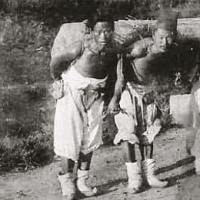
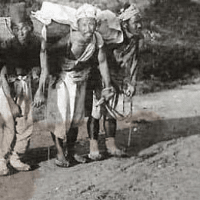
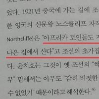
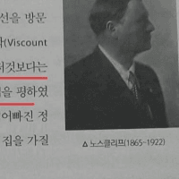
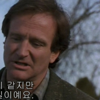

@ㅇㅇ(211.108) 당연히 식민지화 작업전에 섬이나 거점에서 주둔하고있다가 차츰 세력권을 늘리지 띨빡이냐? 뭐 영국이 처음부터 인도 식민지화할때 바로 들어가서 인도 싹다 내꺼 이런줄아노 ㅋㅋㅋㅋ 초기 인도 수라트 지역에 동인고회사 세워놓고 조금씩 영향력행사하면서 식민지화시켰는데 ㅋㅋㅋ
↳ 답글 · ㅇㅇ · 11.27 16:58:27
@ㅇㅇ(211.108) 돈도 좆도 안되는 산악지형인 북인도 시킴 카슈미르 같은 지역은 왜 영국이 영국군 보내서 식민지화나 보호령으로 했음? 거기도 뭐 돈도 안되는데 근대화시켜줄려고 들어간거임??
↳ 답글 · ㅇㅇ · 11.27 16:58:29
@ㅇㅇ(211.173) ㅋㅋㅋㅋ 아 시발 진짜 말이 안통하네 이새끼 진짜 띨빡한놈이네 그니깐 한반도를 점령할 이유가 뭐냐고? 어차피 대한제국같은 좆만이 국가는 영국이 기침만 해도 아이고 들어오십쇼 할텐데 왜 러시아 견제하려고 식민지 만들어야 되는데? 어차피 일본이 러시아 견제 해줄텐데 왜 일본 좆까고 한국 직접경영해야 되는데? 설명해보라니깐?
↳ 답글 · ㅇㅇ · 11.27 17:01:06
@ㅇㅇ(211.173) 카슈미르는 이미 식민지인 인도에 붙어있는데다 카슈미르를 직접 경영한게 아니라 자치권 있는 번국이었음. 그리고 좆만이 체급인 카슈미르랑 대한제국이랑 같냐고.
↳ 답글 · ㅇㅇ · 11.27 17:05:15
@ㅇㅇ(211.108) 미국이 중국 견제하려면 대한민국을 식민지로 만들어야함? 그냥 대한민국에 사드배치하고 주한미군 배치하면 되지 대한민국을 미국령으로 만들어야 되냐고 ㅋㅋㅋ 대답해보라니깐?
↳ 답글 · ㅇㅇ · 11.27 17:05:36
@ㅇㅇ(211.108) 아니 말이 안통하는건 너고 식민지를 단순하게 경제적이익으로만 판단하니깐 니가 하는말이 다 모순되는거임 경제적이익도있겠지만 지리적 위치때문에 식민지화하는 경우도 많은데 뭔 자꾸 돈이많이 드느니 어쨋느니하니깐 문제인거지 경제성 다 따지면 영국이 오세아니아 지역에 식민지개척한것도 말이 안되는거지 다른지역처럼 천연자원이 풍부한곳도 아니고 초기엔 범죄자수용으로 이주시켰다가 나중엔 다른 유럽열강들이 영향력이 강해지니깐 커진 식민지였는데
자기랑 다른 의견 가진 사람 1도 수용 못하는게 딱 저 세대 좌빨새끼들임 ㅋㅋ 왜놈 빨면 눈깔 뒤집혀서 위아래도 없는 ㅋㅋ
ㅇㅇ · 11.27 14:14:25
영포티는 과학이었다. - dc App
ㅇㅇ · 11.27 14:41:06
전라도새끼 좆팔육새끼들이 8090전두환노태우시대 독재 어쩌고하는데 76년생인 내가 겪어본 바로는 그때만큼 나라 호황기가 없었음 존나 행복하도 다들 잘살던 시대 좌파국뽕들의 일제강점기 선동도 같은거임
ㅇㅇ · 11.27 14:42:06
애국심 같은 소리하네. 일제시대가 더 살기 좋았다는게 팩트다. - dc App
ㅇㅇ · 11.27 14:57:59
"좌파는 사실을 말하면 화를 낸다"
↳ 답글 · ㅇㅇ · 11.27 15:29:53
일제강점기 이후 한국 경제성장률 보면 전혀 사실이 아니지
일제강점 35년간 한국경제 2~3배 경제성장
독립이후 35년간 한국경제 38배 경제성장
일뽕씹덕 유입되고 보수우파가 저지능 좌좀화되고 있음
↳ 답글 · ㅇㅇ · 11.27 15:32:37
보수면 그냥 하던데로 친미나 해라
그건 스텟으로 반박도 불가능하니까
언제적 한국한테 소득지표 싹다 쳐따인
망한나라 일본 쳐빨고 자빠짐
↳ 답글 · ㅇㅇ · 11.27 15:39:00
@ㅇㅇ(211.217) 븅신새끼 같은 논리로 조선시대보다 일제때 더 성장 했으면 일본덕에 잘살아진게 맞지 해방후 폭풍성장은 미국 일본 박정희 덕분이고 병신아 꼬우면 일제시대 같은 기간(~45년까지) 조선이 독립국인 상황에서 경제 발전시킨 자료를 가져오던가
↳ 답글 · ㅇㅇ · 11.27 16:05:34
@ㅇㅇ(211.217) 그 35년간의 성장이 전부 일본, 미국 때문이라고요, 이 배은망덕한 개센징 새끼야.
↳ 답글 · ㅇㅇ · 11.27 16:20:00
일뽕엠생 아니랄까봐
자기나라 수탈한 전범국 일제 옹호한답시고
배응망덕같은 패륜 개소리 씨부리고 자빠짐
해방이후 35년간 한국이 성장한 이유는, 한국인들의 노력 덕분임
왜? 같은 35년간 북한도 엄청난 경제성장을 했기 때문
북한이 미국 일본 지원받음?
세상의 그 어떤 나라도, 남에 나라 경제를 키워주지 못함
↳ 답글 · ㅇㅇ · 11.27 16:21:01
@ㅇㅇ(211.217) 북한은 소련 중국 지원 받았지 병신아 진짜 자력갱생한줄 아냐 주체빠 새끼야
↳ 답글 · ㅇㅇ · 11.27 16:23:29
@ㅇㅇ(211.217) 서민들 입장에선 이씨조선을 더 증오하는데 뭔개소리임?
이씨 조선에선 사람취급도 못받고 살다가 일제 덕분에 천지가 뒤집혀졌구만 ㅋㅋㅋ
경제성장도 일본 군인이었던 박정희가 미국이랑 일본에 차관 받아와서 올인박았던거 흐린눈 쳐하고 있노?
↳ 답글 · ㅇㅇ · 11.27 16:33:20
@ㅇㅇ(211.217) 얼마다 도태앰생 국뽕 틀딱 새끼면 일본 미국이 기술지원 . 현금지원 해준것도 모르고 우리 경제가 발전한건 순도 100% 우리 민족이 대단해서 라고 씨부리며 사는걸까 무식한건 괜찮은데 왜 무식하고 멍청한 자폐아 새끼가 이렇게 정신병적인 신념이 강한거지?
↳ 답글 · ㅇㅇ · 11.27 16:39:02
대한제국이 이미하고 있던 근대화 사업을
일제가 날먹 통채로 가로채서
국가발전 목표를 일제 식민지로 격하시킴
그게 바로 일제 35년간 한반도가 거의 발전하지 못한 이유
당연히 해방이후 한국과 북한은 둘다 상당한 경제발전을 했고
한국은 더 나아가 자유시장경제에 편입해서
일본보다 소득 높은 선진국 반열에 이른것
씹덕애니 쳐보다 병신같이 세뇌되서 일본우익 개망상 씨부릴 시간에
개같이 일해서 경제떡상시킨 한국인 조상들한테나 감사해라
↳ 답글 · ㅇㅇ · 11.27 17:09:27
@ㅇㅇ(211.217) 대한제국이 어떤 근대화를 했나요? 왕실 근대화를 했곘죠 군인 월급도 돌맹이 모레 섞어서 줬다가 임오군란 터지는 애미뒤진 좆병신 창녀국가 빠는 씹센징 새끼야 ㅋㅋ
자국민 대다수를 노예로 부리던 조선인들을 해방시켜준 일제를 직접 살아본 사람은 좋다고 말함 vs 직접 살아보지도 않고 자국민을 노예로 부리던 지배층한테 세뇌당한 놈들은 일제 욕하기 바쁨 ㅋㅋㅋㅋㅋㅋㅋㅋㅋㅋㅋㅋㅋㅋㅋㅋㅋㅋㅋㅋㅋㅋㅋㅋㅋㅋㅋㅋㅋㅋㅋㅋㅋㅋㅋㅋㅋㅋㅋㅋㅋㅋㅋㅋㅋㅋㅋㅋㅋㅋㅋㅋㅋㅋㅋㅋㅋㅋㅋㅋㅋㅋㅋㅋㅋㅋㅋㅋㅋㅋㅋㅋㅋㅋㅋㅋㅋㅋㅋㅋㅋㅋㅋㅋㅋㅋㅋㅋㅋㅋㅋㅋㅋㅋㅋㅋㅋㅋㅋㅋㅋㅋㅋㅋㅋㅋㅋㅋㅋㅋㅋㅋㅋㅋㅋㅋㅋㅋㅋㅋㅋㅋㅋㅋㅋㅋㅋㅋㅋㅋㅋㅋㅋㅋㅋㅋㅋㅋㅋㅋㅋㅋㅋㅋㅋㅋㅋㅋㅋㅋㅋㅋㅋㅋㅋㅋㅋㅋㅋㅋㅋㅋㅋㅋㅋㅋㅋㅋㅋㅋㅋㅋㅋㅋㅋㅋㅋㅋㅋㅋㅋㅋㅋㅋㅋㅋㅋㅋㅋㅋㅋㅋㅋㅋㅋㅋㅋㅋㅋㅋㅋㅋㅋㅋㅋㅋㅋㅋㅋㅋㅋㅋㅋㅋㅋㅋㅋㅋㅋㅋㅋㅋㅋㅋㅋㅋㅋㅋㅋㅋㅋㅋㅋㅋㅋㅋㅋㅋㅋㅋㅋㅋㅋㅋㅋㅋㅋㅋㅋㅋㅋㅋㅋㅋㅋㅋㅋㅋㅋㅋㅋㅋㅋㅋㅋㅋㅋㅋㅋㅋㅋㅋㅋㅋㅋㅋㅋㅋㅋㅋㅋㅋㅋㅋㅋㅋㅋㅋㅋㅋㅋㅋㅋㅋㅋㅋ
ㅇㅇ · 11.27 16:15:07
이씨조선 맛본사람이면 일제가 조센한태 해방시켜준거 맞지 시발 ㅋㅋㅋ
이씨조선은 사람 취급도 안해줬구만
ㅇㅇ · 11.27 16:25:23
역시 일본만 꺼내면 발작해서 폭력하거나 살인 저지르는 1찍 좌파 세대답노ㅋㅋㅋ
ㅇㅇ · 11.27 16:43:02
원종이들 조심해라 ㅋㅋㅋㅋ
↳ 답글 · ㅇㅇ · 11.27 16:47:15
ㄹㅇ 조센징 새끼들 수틀리면 강간살인퍽치기가 일상이니 조심해야지 ㅋㅋ
ㅇㅇ · 11.27 16:43:19
저 늙은이는 세뇌받으며 자랐기 때문임
다까끼때가 좋았다 ㅇㅈㄹ하는 틀딱과 똑같음
↳ 답글 · ㅇㅇ · 11.27 16:48:36
조센징은 자기가 세뇌 당한걸 모르고 역사의 산증인한테 세뇌를 당했다며 지랄하는 꼴은 마치 중국 소분홍과 다를 바 없다 하긴 민도도 짱깨랑 똑같으니 행동도 똑같겠지
↳ 답글 · ㅇㅇ · 11.27 18:43:15
경험하지도 않은 주입된 분노로 살인한 새끼 << 이거 세뇌의 정석아님?
ㅇㅇ · 11.27 16:56:20
조센징이 일본을 혐오하는 이유 : 없음 진짜 없음 왜 혐오하냐고 물어보면 대답 못함 그냥 어디서 주워들은거 앵무새처럼 말 할 뿐 근데 혐오.증오 수준은 즈그 애미 애비 강간 토막 살해 한 급으로 증오함 ㅋㅋㅋ 빼애액 조선을 망하게 했잖아요 < 이게 왜 문제? 조선은 조선인의 나라가 아니였는데? 조선인은 이씨왕가 개인 소유물이였지 심지어 전세계적으로 왕권축소되고 왕가폐지되는 시대인데도 대한제국 선포하고 황제놀이 절대왕정 짓 하려던게 이씨왕가였는데 자국민 70%이상 노예로 굴린 조선 빨면서 깐다는게 노예 해방 해준 일본 욕하니까 ^국뽕은 정신병^ 인거지 ㅋㅋ 전세계 어딜가도 노예제나 억압에서 해방해준 사람 빨지 해방해준 사람 욕하는 곳은 없음 있다면 개센징국 뿐 ㅋㅋ
↳ 답글 · ㅇㅇ · 11.27 17:00:53
일본을 혐오하는 진짜 이유는 지들이 봐도 지들 조상이 존나 미개하고 열등하고 버러지 병신 새끼들 로 보이거든 근데 국뽕이라 그걸 깔 순 없음 그니까 누굴 탓해? 중국? 조선은 중국에 대놓고 속국이여서 욕하면 자기도 스플레쉬 데미지 입고 오히려 자기만 병신됌 거기다 조센징 대가리속에서 어쩃든 중국은 1위 우덜은 2위란 서열 중화사상이 자리잡고 있거든
↳ 답글 · ㅇㅇ · 11.27 17:14:08
그럼 누굴 탓할까? 일본이지 일본은 임진왜란 이후 딱히 접점이 없었거든 현실 일본은 중국도 개좆패는 나라였지만 조센징 대가리속에선 막연히 중국이 1위고 우리가 2위 일본이 3위라 느끼거든 그니까 병적으로 모든걸 일본탓으로 돌린거지 언제부터? 독립후 그래서 진짜 일제시기 살아온 사람들은 살기 좋다고 말하며 실제 통계적으로도 완벽히 증명 가능하지만 살아보지도 못한 세뇌당한 4050세대들은 병적으로 일본 혐오하는게 진실이지 조센징은 병적인 자기회피 남탓이 민족 패시브인걸 인정해야함
ㅇㅇ · 11.27 16:59:12
오대남 ㄷㄷ
ㅇㅇ · 11.27 17:24:00
조센징은 어떤 유형의 인간이냐면 가끔 가다가 잘해주고 챙겨주고 했는데 그 은인을 살해했단 케이스 들어봤을꺼임 그런 케이스지 잘해주고 챙겨주고 하니까 원래 그게 내껀데 자기가 뻇긴거라고 느껴버리고 원한 증오 분노가 생기는거 그래서 일본을 원한 증오 분노 하는거고 중국처럼 철저히 속국 수탈 개줫패놓으면 알아서 복종하고 눈깔며 복종함
ㅇㅇ · 11.27 17:38:10
조선 양반들한테나 일본이 원수지 그 밑의 계층들한테는 일본이 해방자나 마찬가지일텐데 반일충들은 지들이 양반였다고 착각하나봐?ww
ㅇㅇ · 11.27 18:06:05
5년은 시발ㅋㅋ 존나 미개하네 진짜로
ㅇㅇ · 11.27 19:08:22
13년 전 만38살이면 지금 51살이네. 역시 영포티 아니 이젠 영피프티 그세대 ㄷㄷ
↳ 답글 · ㅇㅇ · 11.27 19:10:29
원조 영포티 틀딱들 요즘 영포티라는 말 은근히 즐기는거 알고 있냐? 실제 나이는 쉰대남인데 포티라고 불러준다고 은근 좋아하더라 씨발 ㅋㅋㅋ 이젠 영포티 대신 영피프티라고 딱 찝어 얘기해줘야함
!! · 11.27 20:50:49
징역 5년이 중형? - dc App
원택이 · 11.27 06:35:24
일제강점기는 버텨도 소짱개좆센좌빨기는 못 버텼노 ㅋㅋㅋㅋㅋㅋ
ㅇㅇ · 11.27 06:39:55
특정 세대 욕 하는거야 흔하지만 저새끼들은 진짜 좀 너무 아웃라이어인게.. 광우뻥부터 스윗영포티, 손날좌, 설거지론밈까지 임팩트 있는 병신밈은 다 저새끼들이 만들어놓음 ㅋㅋ 지금은 나이 처먹어서 45-55 이쯤 포진한 새끼들인데 이 정도면 논문하나 나와도 되지 않나 싶고.. 아무튼 진짜 여러모로 대단한 세대임 빛의 민주 영포티 세대
↳ 답글 · ㅇㅇ · 11.27 13:40:43
세월호 노재팬도 영포티가 주도했지
ㅇㅇ · 11.27 06:43:55
k 호디존스 - dc App
향격쳐 · 11.27 06:46:04
ㅇㅇ · 11.27 06:46:50
국사로 반일정신병자 양산한 결과임 저 할배는 진짜로 일제축복기에 살아서 지옥도로 변한 한국을 제일 잘 경험했을거임
ㅇㅇ · 11.27 06:50:02
지금 딱 영포티겠네 애미뒤젓노 ㅋㅋ
공정성장 · 11.27 06:50:22
퓌이이터 · 11.27 06:50:37
저런 애들이 정작 윤미향 앞에선 찍소리도 못하는 벙어리 병신이 되어버림 ㅋ
↳ 답글 · ㅇㅇ · 11.27 06:51:50
벙어리가 아니라 좌리앙에서는 칭송이 자자하다
ㅇㅇ · 11.27 06:51:20
1918년생
일제시대 소학교 부터 대학 까지 다 나오고 직장도 다니고 해방직후 자칭 독립운동가들 권력다툼으로 6.25일어나서 친인척 떼죽음 고통당하고도 일해서 나라 발전시킨 세대
직접 일제시대 겪은 사람더러 아무것도 모르는 놈들이 이래라 저래라 ㅉㅉㅉ
ㅇㅇㅇ · 11.27 06:54:43
찬양이 아니라 사실이지, 일제 시대 일부 시기만 제외하고 훨씬 살기 좋고 일본인과 똑 같은 대접 받았다는 게 그 당시 살았던 사람들 대부분 증언이다. 하여튼 틈만 나면 나오는 반일 정신병, 정치 환자들. 오늘 또 정치인이 선동하면 또 광분할 인간들.
↳ 답글 · ㅇㅇ · 11.27 08:54:44
원종 수준 레전드네
ㅇㅇ · 11.27 06:55:11
실제살아본사람은 살기좋았다는데 왜 안살아본 사람들이..
천안문 · 11.27 07:04:37
이재명 강점기가 더 씹재앙이면 개추 ㅋㅋㅋㅋㅋㅋㅋ
ㅇㅇ · 11.27 07:08:28
살아보지도 않은놈들이 쓴 책으로 역사를 배운것들이 실제 살아본사람의 의견을 존중을 못하노 ㅋㅋㅋ
↳ 답글 · 제몸을막만지셨잖아요 · 11.27 07:13:19
ㄹㅇ 실제 겪어본 할배인데
2013년에 95세면 지금 108세임
ㅅㅂ 38세 일제는 좆까고 625도 못겪어본 응애새끼가
세뇌교육받은거랑 다르다고
소신발언하는 이시대의 참된 양심
살아있는 역사 그 자체를 패죽임..
ㄹㅇ 실제 겪어본 할배인데
2013년에 95세면 지금 108세임
ㅅㅂ 38세 일제는 좆까고 625도 못겪어본 응애새끼가
세뇌교육받은거랑 다르다고
소신발언하는 이시대의 참된 양심
살아있는 역사 그 자체를 패죽임..
공정성장 · 11.27 07:12:43
ㅇㅇ · 11.27 07:18:22
당사자가 말해도 안믿는 나라 ㅋㅋㅋㅋㅋ
ㅇㅇ · 11.27 07:22:16
실제 살았던 사람이 찬양하는데 반일세뇌당한 낯술쳐마시는 30대 개백수 찢찍이가 킬구따라 사람 쥭였네
ㅇㅇ · 11.27 07:26:36
본인이 좋았다는데.. 미친 정신나간 좌파들아
ㅇㅇ · 11.27 07:32:05
대일본이 조선 없앤건 대한민국의 천운이다 진짜 ㅋㅋ 알겠냐? 조센징들아
ㅇㅇ · 11.27 07:32:53
개미친 4050 민주당 지지세대 새끼들
ㅇㅇ · 11.27 07:35:32
일제축복기를 직접 살아보고 좋았던 점을 있는 그대로 담담히 말했을 뿐인데 그게 죽임당할 일인가?
무고한 사람을 죽인 반일정신병자 이 미친 새끼들! - dc App
ㅇㅇ · 11.27 07:37:03
할배를 패죽이냐 미친놈
ㅇㅇ · 11.27 07:39:37
사람을 왜죽이냐 살인마놈아 - dc App
ㅇㅇ · 11.27 07:40:26
2찍딸피는 패죽이는게 답임 ㅇㅇ
↳ 답글 · ㅇㅇ · 11.27 07:41:46
짱깨한테 나라를 팔아먹으며.. 1~찍
ㅇㅇ · 11.27 07:50:11
정말 차별이 있었다면 독립운동가 기업가 다 일본 대학 나온 게 의아하긴 해 어케 입학했대 ㅋㅋㅋ - dc App
↳ 답글 · ㅇㅇ · 11.27 08:54:54
ㅇㅇ · 11.27 07:50:25
2010년에 30대=지금 4050
그냥 저세대는 살처분이 답임
ㅇㅇ · 11.27 07:51:37
일제를 실제로 겪어본 사람이 하는 말인데 ㅋㅋㅋ 드라마 영화로만 일제를 체험 해본놈들이 뭘아노 ㅋㅋㅋ
ㅇㅇ · 11.27 07:52:12
2013년에 90대면 사리분별될때까지 일제시대였던분이네
티뀨 · 11.27 07:54:26
공산주의를 격어보지도 않고 참양하는 좌파새기들 같노 ㅋㅋ
ㅇㅇ · 11.27 07:57:19
냉정하게 일본아니였음 교육도 못 받고 살았을넘들이 ㅋㅋ 독립군에서도 지식인들 대다수가 일본교육 받은사람들인데 정작지금 일본교육 받았다는 이유하나로 매국넘 취급
ㅇㅇ · 11.27 07:57:56
현 4050대깨문 좆포티ㅋㅋ
ㅇㅇ · 11.27 07:58:24
마적단 따위를 독립군 취급하는 나라임
오버로크 · 11.27 08:01:22
95세면 살아본사람 아닌가? 자기 생각이랑 다르다고 사람을 죽이냐 ;;. - dc App
↳ 답글 · ㅇㅇ · 11.27 09:03:21
즌라도 1찍 평균
↳ 답글 · 마담2 · 11.27 12:29:35
저게 만 나이니까 해방 당시에는 28살 아니면 29살이였을껄 - dc App
↳ 답글 · ㅇㅇ · 11.27 15:20:19
> 일제강점기 겪어본 사람이 일제 식민지에 대해 뭘 알겠느냐 < ㄷㄷ
↳ 답글 · 금향 · 11.27 15:29:16
@ㅇㅇ 맞는데? 일제강점기 체제 안에서 교육받고 자란 사람만이 할 수 있는 설명과 평가도 있겠지만 동시에 그 안에서 배우고 자랐기 때문에 볼 수 없는 점들도 많음
ㅇㅇ · 11.27 08:06:51
살인을 해도 반일을 하면 빨아주는 이상한 나라 - dc App
thelagacy · 11.27 08:07:07
쵸센징: "그럴리가 없습니다. 아닙니다. 아무튼 사실이라도 그것을 그렇다고 하면 안되는것입니다"
ㅇㅇ · 11.27 08:09:46
자유와 법 여러가지 지식을 가르쳐준게 일본 그 토대로 만세운동을 한 학생들 세상일란게 참 아이러니 하지
ㅇㅇ · 11.27 08:14:27
일제축복기 독립당하고 얼마나 비참해졌는지 참., ,
つついあやめのおっと · 11.27 08:14:56
일제 강점기가 아니라 일제 축복기라는 건 황씨의 행동으로 증명되었군. ㅋㅋㅋㅋㅋㅋㅋㅋㅋㅋㅋㅋㅋㅋㅋㅋㅋㅋ
ㅇㅇ · 11.27 08:16:36
좌파 세뇌 역사교육의 참극. 경험해 본 사람과 경험 해보지 않은 사람 중 누구 말을 더 신뢰 할까 ㅉㅉ
ㅇㅇ · 11.27 08:18:51
고종의 무능과 민비의 부정부패를 싫어했으면 저랫을 수도 있지
ㅇㅇㅇ · 11.27 08:20:00
틀리앙 이 미친새끼들 ㅋㅋㅋ
ㅇㅇ · 11.27 08:26:38
시진핑 주석 각하 제발 조센징의 자유를 박탈해주세요.
숙음 · 11.27 08:27:04
조센을 아시는 식자와 조센징의 마주침은 저렇죠. 주의합시다
ㅇㅇ · 11.27 08:29:10
일제강점기는 잘한거 맞지 ㅋㅋ 그시대 살아보지도않은새끼들이 ㅋㅋㅋ
↳ 답글 · ㅇㅇ · 11.27 08:34:03
어허 일제 축복기라고 해라
ㅇㅇ · 11.27 08:29:25
살아본사람 :살기 괜찮았다
안살아본 새끼: 크아악 일제는 지옥이었는디 느가 뭐슬 안당가?
나가 애국자인디 나라를 위해서 살인한당께 김구슨상님 지켜봐주쇼잉!!!
↳ 답글 · ㅇㅇ · 11.27 08:44:18
2013년에 95세까지 살 정도면 일제강점기때 부유한 집안이라는 견적 안나오냐 ㅋㅋㅋㅋㅋ
↳ 답글 · ㅇㅇ · 11.27 09:02:41
ㄹㅇ ㅋㅋ
↳ 답글 · ㅇㅇ · 11.27 09:03:33
ㄴ 일제강점기 이후로 조선인 평균수명도 올라가고 질병사도 줄었는데 일제가 조선 부유하게 만들어줬단 이야기맞지? ㅋㅋ
↳ 답글 · ㅇㅇ · 11.27 14:58:53
8090년대 시절보고 틀딱들이 그때가 훨씬 살기 좋았다라고 했을때 지금 mz세대들이 그때는 야만의 시대니 뭐니 깍아내리는거랑 비슷한 느낌인가?
ㅇㅇ · 11.27 08:38:09
95세면 자연사 아냐? - dc App
ㅇㅇ · 11.27 08:50:52
예전부터 일제 직접 살았던 사람들은 평가 좋앗음;; 김대중, 김영삼도 일제시대때 알게된 일본인들이랑 평생 연락햇잖슴
ㅇㅇ · 11.27 08:53:28
조선놈들 에게 민주주의 란 인민민주주의 밖에 없다
ㅇㅇ · 11.27 08:59:33
똑같이 이재명 지지하던애들 몇십년후면 저렇게 맞아뒤질텐데 뭐 ㅋㅋ
↳ 답글 · ㅇㅇ · 11.27 09:00:13
광주민주화 꺼내는 순간 "폭동 이새끼야 폭동" 하면서 지팡이로 대가리 존나칠듯
ㅇㅇ · 11.27 09:00:51
구한말과 일제시대 겪은 노인분들에 의하면 구한말에는 아전과 관료들의 탐욕이 상상 이상이라서 그들말이 곧 법이고 강제로 부역해야 했는데 일본이 와서는 꼬박꼬박 임금을 주고 법대로 처분하는걸 보고서 그래도 기강이 있다고 했다. 또한 일본사람들이 다리놓아주는데 지금도 시골에서 그다리는 무너지지 않고 요긴하게 쓴는데 지은지 20년도 안된 슈킹용으로 만든 다리는 금이 쩍쩍가서 일본사람들만 못하다고 한다
'애국심'으로 개돼지들 조련하는게 위정자들 입장에서 얼마나 즐거울까
사이비 종교 교주도 신앙심을 유지 하려면 집회도 열고 나름의 세심한 관리 감독이 필요한데 이 애국심이라는건 진짜 최소 투자 최대 이익이랄까 가성비가 너무 좋아 별 다르게 뭘 하지도 않는데 개돼지들이 알아서 스스로 애국심을 고취하며 자기들끼리 강화하잖아 누구도 국적을 선택해서 태어나질 않았는데 그냥 랜덤 뺑뺑이로 얻은 생득권에 이렇게 자긍심을 가지고 희생하며 살아가는거 이거 너무 웃기는 코메디 아닌가 ㅋㅋ
슈퍼지구민주투사 · 11.27 09:10:28
살아본 사람이 좋았다는데 안살아본 사람이 지랄하는건 좀 ;;;;;
↳ 답글 · ㅇㅇ · 11.27 15:02:40
그럼 한 40년 지난뒤 지금 영포티세대가 이재명시절이 살기가 좋았어 하면 맞는말이 되는거야? ㅋㅋㅋ
ㅇㅇ · 11.27 09:18:19
소짱개 VS 소짱개 센징의 미개한 종족의 살인대결
ㅇㅇ · 11.27 09:21:33
뒤질 때 돼서 뒤진걸 왜 꼴값들을 떨고 앉았노 ㅋㅋㅋ
노망난 영감 하나 잘 패죽인거구만
↳ 답글 · ㅇㅇ · 11.27 16:17:18
너도 노망나면 저렇게 패죽여줄게
ㅇㅇ · 11.27 09:22:25
ㅇㅇ · 11.27 09:26:37
사람 죽인새끼 옹호하는새끼들 존나많네 ㅋㅋ 친일보다 더 큰죄 아니냐 상식적으로 확실히 감정적인새끼들 존나많네
↳ 답글 · ㅇㅇ · 11.27 16:50:56
친일이 왜 죄임? 조선은 자국민 노예로 굴리던 새끼들이고 노비는 성씨도 없었으며 이름도 쌍욕으로 짓던 나란데 노비도 해방해주고 성씨도 주고 이름도 새로 만들게 해주면 정상인이라면 당연히 좋아해야지
ㅇㅇ · 11.27 09:27:35
그 위아래론 몰라도 딱 저 세대랑은 상종안하는게 제일이다
Ragnarr · 11.27 09:28:13
개센징은 수천 년간 짱깨와 붙어먹던 짱깨 잡종 새끼들 아닌가? 그러니 그 습성이 매우 음습하고 저열하며 충동적이고 야만스럽기 짝이 없다.
↳ 답글 · Ragnarr · 11.27 09:29:22
인류 각국은 힘을 합쳐 개센징 버러지 새끼들을 토벌해야한다. 개센징의 목으로 골목마다 경관을 쌓고, 남은 잔당을 일거에 사로잡아 매질하고 또 매질한 다음, 생식 기관을 도려내고 노역장에 팔아버려라. 개센징 스스로를 위해서도 이 것이 최선이다.
ㅇㅇ · 11.27 09:28:18
저 30대도 남들 다 가는 도쿄 오사카는 놀러 갔다왔을듯
↳ 답글 · ㅇㅇ · 11.27 10:22:52
14년전 기사라서 지금은 4050임
↳ 답글 · ㅇㅇ · 11.27 10:25:40
영포티면 무조건이지ㅋㅋㅋ
ㅇㅇ · 11.27 09:28:41
갖잖은 질병으로 백성이 죽어나가고 배가 고프다 못해 굶어 죽는일이 만연했던게 조선임.
국가적 그림으로 봤을때 일제 강점기가 진짜 말도안되게 굴욕적인 역사고 일본 개새끼가 맞는데, 당시 한반도에 살던 살던 사람들 입장에선 상하수도 시설 지어주고 양의학 들여와서 어지간한 병에 목숨을 잃지 않게 됬으며, 식량 품질 개선으로 아사자를 극단적으로 줄여준 일본이 고마웠을거임. 당장 내 생활이 개선되는데 안 반길 사람이 어디있음
↳ 답글 · ㅇㅇ · 11.27 15:10:38
좆본대신 러시아견제를 위해 영미권 국가가 들어왔어야지 그랬으면 안보 경제 문화 모든것들이 지금보다도 훨씬 더 우월했을거임 625전쟁또한 없었을거고 북한이란 존재또한 없었을 가망성이 큼
↳ 답글 · ㅇㅇ · 11.27 16:04:17
@ㅇㅇ(211.173) 영미가 한반도 똥땅에 왜들어오냐 영미가 식민지 만드는건 돈벌려고 하는건데 걔들이 한반도에 자원봉사를 왜해줌? 그나마 일본이니까 돈 안되는 한반도 똥땅이라도 붙잡고 발전시켜서 나중에 대륙침략할 교두보로 삼으려고 개발한거지
↳ 답글 · ㅇㅇ · 11.27 16:05:55
@ㅇㅇ(211.104) 애초에 영국이 일본 키워준 이유가 러시아의 극동지역 확장 견제였는데 뭔 개소리하노 역사교육을 못받음???
↳ 답글 · ㅇㅇ · 11.27 16:06:14
@ㅇㅇ(211.104) 막말로 영미가 작정하고 한반도 먹으려고 했으면 군함이랑 군대 보내서 먹으면 간단한데 왜 그렇게 안했겠냐? 그냥 한반도 식민지로 만들어서 얻을게 없으니 대한제국 이권이나 좀 뜯어먹지 나라 자체를 식민지로 만들지는 않은거임.
↳ 답글 · ㅇㅇ · 11.27 16:07:23
@ㅇㅇ(211.173) 개소리는 니가 하는거지 영미가 한반도 먹을 이유가 뭔데? 한반도 직접경영이 좆으로보이나? 영미가 한반도 직접경영해서 러시아를 막으라고? 영미가 누구좋으라고 지돈써서 지병력으로 한반도 치안유지하고 러시아까지 막아줘야 되는데 ㅋㅋ 그냥 일본같은 싹수보이는애 지원해주는게 맞지
↳ 답글 · ㅇㅇ · 11.27 16:15:20
@ㅇㅇ(211.104) 영일동맹 자체가 러시아견제 목적이 가장 큰이유인데 영미권이 한반도 먹을 이유가 없다고 개소리하네 ㅋㅋㅋ 영국이 거문도 점령하고있다가 1886년 청나라 이홍장이 러시아 라디젠스키와의 협상으로 한반도점령의사 없다는 뜻을 내비친다음 영국군이 철수한건데 뭣 개소리하노 그만큼 영국은 러시아의 극동아시아 영향력에 대해 견제를 많이했고 영일동맹 자체도 러시아 견제가 가장 큰이유로 한 동맹인데 안 그랬으면 극동아시아 변방인 일본같은 급이 한참 떨어지는 나라랑 왜 동맹을 맺음 ㅋㅋㅋ
↳ 답글 · ㅇㅇ · 11.27 16:19:08
@ㅇㅇ(211.104) 그당시 많은 유럽권 외신들도 영국이 일본이랑 동맹맺은거에 대해서 놀라워했는데 유럽 자기들 입장으로 치면 급떨어지는 아시아 삼류국가랑 동맹 맺은거라 러일전쟁으로 일본이 유럽내에서 재평가되기전까지 유럽내 모든국가가 의아해했음 우리나라로 치면 감비아랑 군사동맹맺은 느낌이라고 치면된단다 원종아 ㅋㅋㅋ
↳ 답글 · ㅇㅇ · 11.27 16:21:08
@ㅇㅇ(211.173) 그니깐 너는 러시아 견제한답시고 한반도 먹어서 직접경영 한다는건데 그게 말이 되나? 식민지는 어디까지나 식민지임. 식민지에서는 자국처럼 병력을 마구 뽑아낼 수 없음. 어디까지나 지배국의 군사력이 우위에 있어야 식민지를 유지 가능함. 그러니 식민지의 병력은 뭐 적당히 뽑아쓰는건 가능해도 식민지 군대를 열강인 러시아를 혼자서 막을 수 있을 정도로 강화한다는건 망상에 가까움. 식민지 군대가 그정도로 강하면 자칫 반란이 일어나면 식민지 자체가 통째로 날아가기 쉽기 때문임. 결국 영미가 한반도 먹는다 해도 러시아를 견제하려면 자국 병력을 배치해서 러시아의 남하를 막아야 하는데 그럴거면 식민지로 삼을 이유가 어딨음? 한반도는 명백히 뽑아낼 돈은 없고 식민지 유지 비용만 좆같이 많이 들고
↳ 답글 · ㅇㅇ · 11.27 16:22:45
@ㅇㅇ(211.173) 자기돈 자기병력 쳐 들여서 러시아 견제할거면 식민지로 만든 이유가?? 그냥 자기가 스스로 러시아에 맞서 싸운다는 일본 지원해주는게 훨씬 낫지. 너는 ㅈ도 모르면서 입만 걸레 쳐물었나 저지능 티내지 말고 아가리 닫고 살아라 ㅋㅋ
↳ 답글 · ㅇㅇ · 11.27 16:24:59
@ㅇㅇ(211.104) 니 생각대로 러시아 견제한답시고 러시아 주변 나라들 식민지로 만들거면 오스만도 식민지로 만들고 중국도 식민지로 만들고 폴란드도 식민지로 만들고 아주 그냥 다 식민지로 쳐 만들면 되겠네 ㅋㅋㅋㅋㅋ
↳ 답글 · ㅇㅇ · 11.27 16:31:12
@ㅇㅇ(211.104) 그래서 영국이 일본을 이용해서 러시아 남하를 막았다고 말하는데 혼자서 계속 뇌피셜을 돌리냐 만약에 러시아가 적극적으로 한반도점령의사를 표했으면 대규모 군사를 배치했지 그당시 영국은 러시아에 대해 히스테리적으로 반대하고 나섰는데 니말대로 하면 프랑스의 알제리식민지 운영은 말도 안되는 일임 알제리로 얻는 수익보단 오히려 알제리에 들어가는 프랑스 재정이 더 들어갔는데 이건 어떻게 설명함? 프랑스도 식민지 재정적자임에도 알제리식민지와 모로코보호령운영 한 가장 큰 이유가 북아프리카와 지브롤터 해협의 영국영향력견제가 가장 큰이유였는데
↳ 답글 · ㅇㅇ · 11.27 16:38:36
@ㅇㅇ(211.104) 니말 또 반박할수있는것도 영국이 식민으로 좆도 이익도 없는 북인도 시킴이나 카슈미르 지역 히마찰 지역에 왜 굳이 돈들여가면서 보호령으로 군사 주둔하고 주위에있던 네팔이나 부탄같은 나라에 군사적 영향력까지 끼침?
↳ 답글 · ㅇㅇ · 11.27 16:40:26
@ㅇㅇ(211.104) 반박을 하고싶으면 최소한 역사공부를 좀 하던가 말하는거 들어보면 죄다 어디 인터넷에서 주워들은 말이나 뇌피셜 돌려가면서 말하니깐 대화가 안통하는거임
↳ 답글 · ㅇㅇ · 11.27 16:50:55
@ㅇㅇ(211.173) 섬이나 일부 지역에 군사 요새 박아넣는거랑 인구 1500만 국가를 식민지화 하는거랑 같냐? 너야말로 예시를 들거면 말이 되는 예시를 들던가.. 군사적 영향력은 동맹인 일본을 통해 끼치고 있는데 뭔 한반도를 점령해서 군사적영향력이여 ㅋㅋ
↳ 답글 · ㅇㅇ · 11.27 16:52:35
@ㅇㅇ(211.108) 그러니깐 알제리 같은 경우를 설명해
보라니깐 뭐 프랑스가 알제리인들의 근대화를 위해 들어갔다고 씨부릴려고? ㅋㅋㅋㅋ
↳ 답글 · ㅇㅇ · 11.27 16:54:05
@ㅇㅇ(211.108) 그리고 군사배치는 식민지화 안해도 가능한건데 식민지화할필요가 어디 있냐고 그래서. 프랑스가 알제리 모로코 식민지화한거 예시로 들었는데 프랑스 본국이랑 바로 붙어있고 본국 방위에 중요한 알제리 모로코랑 지구반대편에서 좆도 쓸모도 없고 돈도 안되는 한반도랑 같냐? 한반도 지키면 본국 방위가 돼? 러시아 견제도 정도가 있지 한반도를 먹어서 뭔 러시아 견제여 ㅋㅋ
ㅇㅇ · 11.27 02:45:51
팩트를 말하면 살인부터 하는 좆센징들 ㅋㅋㅋㅋㅋㅋㅋ
↳ 답글 · ㅇㅇ · 11.27 02:45:56
ㅇㅇ · 11.27 02:47:39
조두순도 전두환 대통령 때 살기 좋았다는 말 듣고서 그 말한 사람 죽였잖아
ㅇㅇ · 11.27 02:48:59
참 신기한일이지 역사를 배울때 조선후기를 지금 북한보다도 더한 지옥같은 독재국가로 배우고 일제강점기에선 그 조선후기에서 고작 수십년 지났을뿐인데 갑자기 세상이 원시시대에서 근현대시대로 확 진화하고 사람들이 자유와 평등을 생각하고 그마저도 불만이 있는 일부사람들이 독립운동을 벌일정도로 갑자기 세상이 확 살만해졌는데
여기서 후자를 더 나쁜 나라라고 하고 전자를 더 좋은나라라고 생각하는 사람이 실제 많다는게
ㅇㅇ · 11.27 02:50:55
일제 겪어본 사람 - 찬양
일제 안 겪어본 사람 - 분노
↳ 답글 · ㅇㅇ · 11.27 02:51:30
ㅇㅇ · 11.27 02:52:23
의외로 한국 반일은 1980년대부터 거세진거임
↳ 답글 · ㅇㅇ · 11.27 02:55:24
한일협정 반대투쟁????
ㅇㅇ · 11.27 02:52:49
정작 조선시대+일제시대 다 살았던 사람들은 조선에 비하면 그래도 일제가 나았지 하고 좀 중립적이었는데 나중에 1980년쯤에 일제 겪어보지도않은 애들이 이상한 망상 빠져서 겪은 세대보다 더 욕함 ㅋㅋㅋㅋ
↳ 답글 · ㅇㅇ · 11.27 02:53:55
딱 중국에서 지금 문혁 겪은 늙은 세대들 사라지고 나니까 이상하게 역사교육받은 소분홍들 나서서 애국주의 운동하는거랑 똑같지
남의 이야기가 아님 586이 딱 그세대임
인터넷 시대 되고 객관적으로 진실 탐구가 가능해진 mz시대가 아니었으면 한국 젊은세대도 소분홍 꼴 났을것
ㅇㅇ · 11.27 03:10:44
살아본사람이 좋다는데 ㅂㅅ - dc App
ㅇㅇ · 11.27 03:11:34
살아본 사람 말 좀 들어라 ㅅㅂㅋㅋ
ㅇㅇ · 11.27 03:17:30
조센징 민족성이 딱 원종이 급인거지
예전에 김구 암살범 정의봉으로 죽인 원조 원종이도 찬양하고 난리도 아니였음
↳ 답글 · ㅇㅇ · 11.27 03:46:40
근데 왜 주객전도함? 그냥 홧병나면 민주강간살인 하는게 조센징이잖아 ww
↳ 답글 · ㅇㅇ · 11.27 03:58:25
조센징은 조센징급인거지 누구급인게 어딨어 애미창녀 씹센징새끼얔ㅋㅋㅋㅋㅋㅋㅋㅋㅋㅋㅋㅋㅋㅋ
ㅇㅇ · 11.27 03:25:58
원종단 오열 ㅋㅋㅋㅋㅋㅋㅋㅋㅋㅋㅋㅋ
ㅇㅇ · 11.27 03:29:11
원종이 새끼들 지능에선 일본이 봉사하러 들어온 줄 암.
ㅇㅇ · 11.27 03:30:00
일본이 그렇게 뛰어난 국가면 계속 잘나가야지 ㅋㅋㅋㅋㅋㅋㅋ 왜 점점 김치한테 따라잡히고 역전당했노?
↳ 답글 · ㅇㅇ · 11.27 03:44:09
화나서 댓글 와바박 쓴거 보면 오늘 강간살인 하겠네 센~징 ㅋㅋ
↳ 답글 · ㅇㅇ · 11.27 03:49:01
@ㅇㅇ(31.56) 병신나라 ㅋㅋ 점점 조센징한테 좆발리는데 니가 아갈 털어봐야 뭐가 바뀌겟노. 니 혼자 부들부들 거리는거지
↳ 답글 · ㅇㅇ · 11.27 03:53:19
@ㅇㅇ 너 지금 구인배수 0.3이라 30넘게 취업도 못하고 도태앰생백수로 사는 윤종단을 병신취급 한거냐?
↳ 답글 · ㅇㅇ · 11.27 04:02:59
@ㅇㅇ 너 지금 30넘게 취업도 못하고 도태앰생백수 로 사는게 디폴트인 한국 비꼬고 늦게 취업하고 일찍 짤리며 근속년수 평균 7년 생애총소득 10억따리인 한국인 비꼬는거지? 새끼 비꼴 줄 아네 ㅋㅋ 너도 아는거야 한국이 좆병신 나라란걸
↳ 답글 · ㅇㅇ · 11.27 04:05:36
@ㅇㅇ(192.42) 아니 쳐 발리고 있으면서 뭘 그렇게 대변하고 자빠져 있어 ㅋㅋㅋㅋㅋㅋㅋㅋㅋㅋ 뭐 변호사여?ㅋㅋㅋㅋㅋㅋㅋㅋㅋㅋㅋㅋㅋㅋㅋㅋㅋㅋㅋㅋㅋㅋㅋㅋㅋㅋㅋㅋㅋㅋㅋㅋㅋㅋㅋㅋㅋㅋㅋㅋ 삼전 하나에 1~100위까지 기업 전체 다 따잇한 느그 주인님 나라가 그렇게 좋으면 이민가라니까
↳ 답글 · ㅇㅇ · 11.27 04:07:10
@ㅇㅇ(192.42) ㅋㅋㅋㅋㅋㅋㅋㅋ 어짜피 조센징 밑으로 내려가는 나라 그냥 이참에 주인님을 응우옌으로 바꾸는건 어떻노?
↳ 답글 · ㅇㅇ · 11.27 04:10:23
@ㅇㅇ(192.42) 조선에서 패배한 새끼들이 원래 열등감으로 조선보다 잘사는 나라 가져와서 사대하는게 기본 패시브 아니냐,. 이제 주인님 미국으로 갈아타지 그러냐
↳ 답글 · ㅇㅇ · 11.27 04:12:09
@ㅇㅇ 아 또 이러신다 너도 알잖아 한국이란 나라가 얼마나 좆병신인지 ㅋㅋ 구인배수 0.3이라 일자리도 없어 자살율은 1위야 출산율 전세계 꼴지 상가공실률은 역대 최고라 상가란 상가는 죄다 임대딱지 붙은 경제 개좆망 국가인걸 ㅠㅠ 한국인들 조차 요즘 한국은 미래가 없고 망했다더라..
↳ 답글 · ㅇㅇ · 11.27 04:14:28
@ㅇㅇ 오죽하면 한국인들도 일본에 일하러 가곘냐.. 일본에 열등감에 맨날 욕해도 한국인들도 아는거야 일본이 살기 좋고 돈을 많이 준다는걸 한국 망한건 한국인들도 인정하는데 왜 방구석 도태앰생 무료 변호사가 부정하는지 모르곘음..
↳ 답글 · ㅇㅇ · 11.27 04:23:24
@ㅇㅇ 일본 애들은 20초에 취업해서 정년까지 안정적으로 가는 종신고용이고 한국은 30초중반에 취업해서 50초에 짤리기 떄문에 일본애들 생애총소득 3억엔일떄 한국인은 10억인 거지들인거임.. 좀 불쌍하지.. 일하는 시간도 일본보다 연간 300시간이나 더 일하는데 평생 워라벨이란 개념조차 없이 살아도 버는 액수는 한줌뿐이니..한국 민도 생각하면 열등감 느낄만 하다 생각 듦..부럽고 원망스러울꺼야 어쩌겠냐 조센징 따위가 부정해도 이게 현실인데
↳ 답글 · ㅇㅇ · 11.27 07:00:37
@ㅇㅇ(80.67) 디시 상주 vpn 원종이 또 나대고 있노
한국보다 평균연봉, 중위소득 500만원 뒤쳐지고
인당 한국 gdp 43000달러 일본 gdp 36000달러
ai피셜 15세이상 고용률 70퍼 청년 고용률 42퍼인데
당장 60세 정년보장하는 9급 사복,건축, 토목 등
합격선 ㅈㄴ 낮거나 미달나는데 그마저도 취직못하는 앰생들까지 포함시키노
↳ 답글 · ㅇㅇ · 11.27 07:03:11
@ㅇㅇ(80.67) 심지어 세금도 최소 5퍼이상 더내고
전기세,교통비도 민영화라 2배이상 더 낸다는데
돈은 도대체 어떻게 모으노? ㅋㅋㅋㅋ
그리고 일본내 체류 한국인은 계속 줄고 있는데
진짜 천국이면 늘어야지 저능아노
심지어 5년마다 대지진 ㅈㄴ나고 그때마다 조 단위 피해에 곧 난카이 대지진, 수도권 직하대지진 파티도 준비중이라며? 피해예상규모는 최소 1000조원이고ㅋㅋ
↳ 답글 · ㅇㅇ · 11.27 07:07:17
@ㅇㅇ(80.67) 그리고 재산은 당연히 저능아년아
일본이 평균연령 50세인 초고령화 노인사회니깐
평균연령만 5세 차이나니깐 더 많을 수 밖에 없지
30살이랑 35살이랑 비교하면 대부분 당연히 35살이 재산도 많고 연봉도 높지 저능아냐?
근데 중위소득이 한국이 더 높다는점 ㄷㄷ
그렇게 정년보장해주고하면 평균 50세인 일본이 인생 최대 연봉인시기 일텐데
↳ 답글 · ㅇㅇ · 11.27 07:09:33
@ㅇㅇ(80.67) 왜 한국보다 평균연봉도 중위소득도 떨어지는거야?ㅋㅋㅋㅋㅋㅋㅋㅋㅋㅋㅋㅋ
너 중위소득이 뭔줄은 알지?
아 빈부격차는 말하지마라 한국이 지니계수 더 낮다
빈부격차마저도 일본이 더 크다
참고로 2026년이는 삼하관련 3억원 이상 성과급 받는 사람들만 10만명이라 평균연봉 더 차이나겟노
↳ 답글 · ㅇㅇ · 11.27 07:19:31
@ㅇㅇ(80.67) ㄹㅇ 좌빨 개샌징은 모순 덩어리임 ㅋㅋ 세계에서 가장 오랜기간 인간을 노예로 쓰레기 취급하던 조선은 빨아야되고, 일제보다 한국인을 훨씬 많이 죽인 북한은 감싸야할 우리 동포고, 자본주의 기업가들은 타도해서 광장에서 불태워 죽여야 되지만 반도체 호황에 일본 따잇했다고 우리 샘숭이고. 이게 뭐하자는 개버러지 앰생인지 모르겠음 ㅋㅋ 걍 이런 개새끼들을 잡아서 너클과 야구배트로 패 죽이는게 나라가 건강해지는 지름길인거 같음.
↳ 답글 · ㅇㅇ · 11.27 07:25:42
@ㅇㅇ(186.247) 주인님 못빨아서 미쳣노?? 니가 조선에서도 병신이니까 열등감만 쌓여서 지금 ㅋㅋ 일본 존나 빠는거 잖아. 근데 빨아도 한국보다 잘난 나라를 가져와서 사대를 해야지 이제 한국보다 떨어지는 나라 가지고와서 광광 거려봐야 씨알이 먹히노??? 차라리 응우옌이나 빨던가 병신아 ㅋㅋㅋㅋㅋㅋㅋㅋㅋㅋㅋㅋ
↳ 답글 · ㅇㅇ · 11.27 07:38:34
@ㅇㅇ(186.247) 공감함..저런 씹센징들이 죽어야 진정으로 일본을 뛰어넘을 수 있을듯
↳ 답글 · ㅇㅇ · 11.27 16:38:32
@ㅇㅇ(223.38) 생애총소득 10억 vs 3억엔 진실 듣고 홧병으로 뇌가 고장나버렸네 불쌍한 국뽕 친구.. 어쩌겠냐 방구석에서 중위소득 1인당 GDP 중얼거려봐야 삼닉이 올려논거고 현실과 전혀 상관 없는 허상수치일 뿐이며 하물며 한국인들은 구인배수 0.3이라 취업 자체를 못해서 돈을 못버는데 그게 무슨 소용일까.. 중요한건 인구 40%가 비정규직에 월평균 211만원 받고 산다는거지...좀 현실좀 보자 한국인들 조차 한국 망했다며 곡소리 내는데 왜 도태앰생국뽕 새끼가 방구석에서 필사적으로 변호하는거야 ㅠ
↳ 답글 · ㅇㅇ · 11.27 16:44:22
@ㅇㅇ(223.38) 중위소득이니 1인당 GDP니 결국 이것들은 삼닉이 영업이익을 수백조씩 벌어와서 늘어난 것 뿐이지 한국인들 평균 월급은 만원조차 안오르고 있단 사실을 왜 모르는걸까..참 안타까움 국뽕 보고 있으면..한국 전체 인구수 중 삼+닉 다 합해봐야 0.2~0.3%뿐인데.. 자기 인생과 전혀 상관 곳에 빙의를 해가며 자기가 삼닉 직원 혹은 회장인 척 꺼드럭 대는게 웃음벨이지만 w 삼닉 0.3% 빼고 99.7%가 싸그리 개좆망해서 구인배수 0.3이란 진실을 언제쯤 이해할까? 그래서 조센징 새끼들 취업이 안되고 생애총소득이 ^한줌^인건데 ㅠ
dd · 11.27 03:30:07
참..미군정이 떠나면 새로운 주인한테 복종하면서 반미 하겠지? 조센징들이란..참..
ㅇㅇ · 11.27 03:31:18
원래 조선은 시민혁명으로 갈아 엎어질 나라였다. 다만 시대가 좆같이 아다리 잘못 걸려서 부패한 왕가가 감당을 못하니 짱게랑 일본 불러들인거지
↳ 답글 · 얼리버드 · 11.27 10:30:53
시민혁명? 꿈 깨. 당장 북한을 봐도 알 수 있는데 ㅋㅋㅋㅋ.
일제가 안 들어왔으먼 쭉 개돼지노예처럼 살았고 지금도 그랬겠지.
ㅇㅇ · 11.27 03:31:56
중한데 5년 시발 ㅋㅋㅋㅋㅋㅋㅋㅋㅋ
ㅇㅇ · 11.27 03:38:48
지금이면 딱 영포티 . 영피프티 나이네 . ㅋㅋ 이 세대가 반일세뇌 진짜 심각 ㅋㅋ
↳ 답글 · 불쌍 · 11.27 07:51:17
반일세뇌가 아니라 시발련아 일제강점기를 찬양했다는데 그게 맞는거냐? 등신새끼
ㅇㅇ · 11.27 03:41:45
걍 근대국가 대한민국 시스템 자체가 일제시대에 그 근간이 형성된 것임.
↳ 답글 · ㅇㅇ · 11.27 03:42:01
구한말까지 민둥산 천지가 되어버린 조선에,
식목일을 제정하고 수십억 그루의 나무를 심은 게 바로 일본임.
한국 역사상 최초로
조선총독부가 1911년에 매년 4월 3일을 식목일로 제정하였고,
1907년~1942년의 35년 동안
236만 정보의 산야에 약 82억 1,500만 그루의 나무를 식재하였음.
그리고 미군정 때 식목일이 4월 5일로 변경된 후
지금까지 이어져 내려온 것임.
↳ 답글 · 明治 · 11.27 04:25:23
@ㅇㅇ(211.234) 日本式教育을 받고 日本語를 써야 될 朝鮮半島人들이 ... 참으로..悲痛하다..日本이라는 강인한 母親의 곁을 떠나니 지들끼리 争い 하는 철없는 息子達..
@ㅇㅇ(211.250) 지금도 똑같아 이병신아 김대중때 일본과 통화스왚 모기지엄사태때 이 스왚량 늘리고 이게 만약 다시 만주시대가 열리고 일본의 영향권아래 움직이다 일본이 몰락하고 몇십년뒤 역사를 쓴다고 가정해봐라? 우리가 일본때문에 이모양이다 하면서 또 주작할 꺼리들이야 이게 병신아 다 ㅋㅋㅋㅋㅋㅋㅋㅋㅋㅋㅋㅋ 대가리를 굴리고 살아 좀 ㅋㅋ
ㅇㅇ · 11.27 01:10:06
언럭키 민족반역자
ㅇㅇ · 11.27 01:10:12
언제는 또 폭력은 정당화될수없다면서 이럴때만 풍악을 올려라~~~ 에라이ㅋㅋㅋ
ㅇㅇ · 11.27 01:11:34
럭키 민족반역자였으면 운전기사나 집사가 막아줬을듯
ㅇㅇ · 11.27 01:11:47
근데 일제 경험해본 어르신들 중에 일제 나쁘게 얘기하는사람 본적이 없음
ㅇㅇ · 11.27 01:12:38
안두희같은 네임드 살해의도로 때려죽인 놈은 의인취급해주는데 저런 개듣보 고대원종단들은 실수로 죽여도 중형 받는게 현실
ㅇㅇ · 11.27 01:13:24
저 30대가 애국자네... 도태쉼대남 원종단 뉴라이트 2찍극우 실베앰생 새끼들도 저렇게 패죽여야 하는데 ㄹㅇㅋㅋ
↳ 답글 · ㅇㅇ · 11.27 01:13:53
ㄹㅇㅋㅋ
↳ 답글 · ㅇㅇ · 11.27 03:54:05
ㄴㄴ 노괴한녀 짱깨북괴못잃는 1찍극좌 종북친중간첩 새끼들부터 저렇게 패죽여야함 ㄹㅇㅋㅋ
ㅇㅇ · 11.27 01:16:31
무슨 디스토피아 소설 세계관 같네. 왜곡된 과거를 제대로 기억하는 몇 안 되는 노인들은 세뇌된 홍위병들에게 맞아죽고, 역사학자란 것들 대다수는 국가의 이념 선전에만 봉사하는 노예 좀비들이고
↳ 답글 · ㅇㅇ · 11.27 01:17:54
↳ 답글 · ㅇㅇ · 11.27 04:17:38
현실은 늘 상상 이상이지
ㅇㅇ · 11.27 01:19:00
일제강점기가 조선인에게 주어진 마지막 기회였지
ㅇㅇ · 11.27 01:21:21
한반도에서 근대국가의 기틀을 다진 게 일본이기 때문에, 잘했다고 얘기할 수 밖에 없는 것임.
우리나라 농협 시스템도 일제시대 금융조합 시스템 그대로 계승한 거고.
그래서 초기 농협 사무실은 일제 금융조합 사무실 건물 그대로 갖다썼다.
ㅇㅇ · 11.27 01:22:16
직접 겪어보지도 않은 세대가 경험자 무시하고 패죽여서 징역 5년이 말이 되냐????
ㅇㅇ · 11.27 01:22:25
조센징이 일본 혐오하는 이유 = 지들 조상이 존나 무능하고 덜떨어진 자폐성향 병신새끼들이라 진짜 역사 배우면 모두가 혐한 되거든 결국 지들 조상 탓을 할 순 없으니 아무튼 남 탓이라도 해야겠는데 그게 일본일 뿐임 그 세뇌가 언제부터 시작됐냐면 독립후 혐일세력이 집권한 이후부터임 ㅋㅋ 그니까 그 전에 살던 사람들은 일제떄 살기 좋았다 하는거고 살아보지도 못한 새끼들이 입에 거품물며 발작하는거고
ㅇㅇ · 11.27 01:23:13
우리나라 지방 특산물이라고 하는 것도,
'충주 사과' 일본인이 시작한 거고, '나주 배'도 일본인이 시작한 거고,
'천안 호두과자'도 일본인이 시작한 거고, '전남 보성 녹차밭'도 일본인이 시작한 것임.
대한민국 시스템의 근간이 사실상 일제시대 때 만들어졌다고 해도 과언이 아님.
ㅇㅇ · 11.27 01:25:56
무섭지 않냐?? 그 시기를 직접 몸으로 겪은 사람은 그 시대를 원하지만 정작 그 몸으로 겪은 사람들이 일군 나라에서 온갖 편리 누리며 늦게 태어나 겪어 본 적 없는 새끼들은 그 시대를 저주하고 그 시기를 직접 겪은 사람을 혐오하며 그 시기를 직접 겪은 사람들이 일군 나라를 좀 먹고 있음 ㅋㅋㅋㅋㅋㅋㅋㅋㅋㅋㅋㅋㅋㅋㅋㅋㅋㅋㅋㅋㅋㅋ
↳ 답글 · ㅇㅇ · 11.27 01:26:00
ㅇㅇ · 11.27 01:26:21
조센징은 한국사 교과서를 도덕책이라 생각함
삭제됨 · 11.27 01:26:24
삭제된 댓글입니다.
↳ 답글 · ㅇㅇ · 11.27 01:29:00
혹시 다까끼 마사오 빨아 제끼는 대구 일베충?
↳ 답글 · ㅇㅇ · 11.27 01:30:03
@ㅇㅇ(39.119) 1910년 조선 인구는 약 1600만명 정도이고, 1945년 조선 인구는 약 2500만명이었음.
35년 동안 900만명 늘어난 것임. 이것도 많이 늘어난 것임.
식량 수탈이 있었으면 이런 인구 증가는 불가능하지. 먹을 식량이 없는데 어떻게 생존을 해 ㅋㅋㅋㅋㅋ
↳ 답글 · ㅇㅇ · 11.27 06:03:16
@ㅇㅇ(211.234) 이런 애들이 1935년 기준 조선인과 본토일본인 연간 쌀소비량 2.5배이상차이 나는건 흐린눈하면서 인정안함 ㅋㅋㅋ
↳ 답글 · ㅇㅇ · 11.27 09:57:01
@ㅇㅇ(211.173) 헛소리 ㄴㄴ
어차피 조선시대 일반 서민의 주식은 잡곡이었다. 조선에서 쌀은 화폐 그 자체였기 때문임.
쌀을 팔아서 돈을 벌고 그 돈으로 잡곡을 사다먹은 것임.
@ㅇㅇ(211.234) 일제시대초인 1915년때부터 1935년까지 조선인 연간 쌀소비량은 꾸준히 줄어들었고 같은 시기 본토 일본인은 꾸준히 늘어갔는데 중일전쟁발발이후 산미증식계획과 중국남부지역 동남아지역까지 점령지를 넓히면서 쌀수탈하는 지역이 늘어나면서 다소 조선인 쌀소비량이 늘었구만 뭔 개소리하노 ㅋㅋㅋ
↳ 답글 · ㅇㅇ · 11.27 14:33:18
@ㅇㅇ(211.173) 연간 쌀소비량 변화 1912-1919년 일본인 평균 161.3kg 조선인 평균 107.2kg 약1.5배 1930-1936년도 일본인 평균 162.4kg 조선인 평균 64kg 약 2.54배 차이 -조산총독부 농림국 <조선미곡요람>통계 기준으로 말하는거
↳ 답글 · ㅇㅇ · 11.27 14:34:10
@ㅇㅇ(211.173) 헛소리 ㄴㄴ
조선시대 때부터 일반 서민의 주식은 잡곡이었고,
구한말 때부터 시작된 일본으로의 쌀수출이 일제시대 산미증산계획과 더불어 가속 증대되면서, 쌀을 팔아 돈을 버는 구조가 가속화된 것뿐임.
조선 농민이 가지고 있는 소 죽여서 소고기 먹는 소리하고 앉아있노 ㅋㅋㅋㅋㅋ 그 당시 소는 농기구였고, 쌀은 상품이자 화폐였다.
↳ 답글 · ㅇㅇ · 11.27 14:48:58
@ㅇㅇ(211.234) 헛소리 ㄴㄴ
1935년도에 조선인 연간 쌀소비량 최저점인 58kg찍었다가 중일전쟁 발발이후 조선이 만주침공의 발판인 병참기지화되며 쌀에대한 대일수출제한 걸리면서부터 조선인연간쌀소비량이 늘어난건데 니말처 잡곡이 주식이던 조선인들이 2년사이에 갑자기 식성이 바뀌었음? ㅋㅋㅋ
↳ 답글 · ㅇㅇ · 11.27 14:52:11
@ㅇㅇ(211.234) 그리고 1935년이면 일제시대 중반기를 넘어 후반기로 들어가던 시대인데 니가 말하는 일반 서민들의 생활수준이 구한말이랑 별반 다를바 없다는건데 분명 일제가 더 살기 좋았다라는 말이랑은 모순되는거 아님? ㅋㅋㅋ
ㅇㅇ · 11.27 01:27:42
살아본 새끼가 그렇다는데 왜 지랄이야 ㅋㅋㅋ
ㅇㅇ · 11.27 01:27:47
대구에서 올라온 진퉁 일베충 노인인가 보네... 자기 동네에서나 통할 논리를 ㅋㅋㅋ
ㅇㅇ · 11.27 01:28:08
우리나라 사람들이 좋아하는 '거봉(巨峰)' 포도도, 1940년대 일제 말기에 오오이노우에 야스시가 개발한 품종인데, 일본에서는 '쿄호(巨峰)'라고 발음함.
이것도 오오이노우에 이농학 연구소 창문에 보이는 '후지산'을 빗대어서 지은 것임.
이거 알면 또 반일국뽕들이 거봉 꺼릴려나? ㅋㅋㅋㅋㅋㅋ
↳ 답글 · ㅇㅇ · 11.27 04:20:04
그 반일국뽕 조선 게 부류는 그런거 내로남불이라서 지 입에 들어가는건 마구 먹어댐
ㅇㅇ · 11.27 01:29:47
살아본 사람이 살기 괜찮았다는데 겪어보지도 않은 놈이 풀발해 때려죽임. 이게 현재 똥팔육의 본질임.
ㅇㅇ · 11.27 01:31:08
감히 자랑스러운 대한민국의 근본 질서를 흔들려 했다면 맞아죽어도 할 말 없지 진실은 그렇게 중요하지 않다
ㅇㅇ · 11.27 01:33:13
저런 4050 새끼들 할줄 아는거라곤 강간살해같은 흉악범죄와 혐일선동 뿐임 전세계 어딜가도 국룰이 젊을떄 범죄율 높고 나이먹으면서 점잖아 지는데 한국만 4050 새끼들 나이 먹는거에 따라 범죄 데이터 1위가 같이 움직임 솔찍히 이새끼들 국뽕인데 써먹을데가 없거든? 가스실에 몰아넣고 집단학살해서 인생 최초이자 마지막 애국 할 기회 줘야함..
히이잉 · 11.27 01:33:22
ㅇㅇ · 11.27 01:36:01
팩트는 저 시대에 개센징으로서의 자유를 짓밟히며 살았던 양반이 자유대한민국에서 저 시대를 빨 자유를 짓밟히며 죽었다는거임 ㅋㅋ 95세에 탑골공원에 있었으면 105세에도 멀쩡했을거같은데
↳ 답글 · ㅇㅇ · 11.27 01:39:54
자유가 없던게 조선인이였는데 일제떄 자유가 생긴거지 애초에 조선인은 조선왕의 개인 소유물이였고 개인의사는 없었거든 일제가 노비 해방해주고 성씨와 이름도 가지게 해줬으니까 그떄 살던 노인분들은 다 호의적인거임 싫어할 이유가 없으니까
↳ 답글 · ㅇㅇ · 11.27 01:43:12
@ㅇㅇ(204.8) 그걸 찬양하니까 죽인사람은 정작 그런 자유사회로의 변화를 경험했을 리도 없는 한참 뒷세대ㅋㅋ 하다못해 629선언도 저새기 초딩때임
@ㅇㅇ(211.173) 네 다음 조선말 서울 노비비율 60%넘어간 애미창녀 노비 민족 씹센징 wwwwwww
↳ 답글 · ㅇㅇ · 11.27 17:27:47
@ㅇㅇ(211.173) 노비가 없었는데 왜 조선은 스스로 노비제를 못 없애고 일본 정부가 개입해서 노비제를 없앴을까? ㄹㅇ 저지능 자폐 조센징 대가리로는 이해하기 힘든 영역이긴해 ㅋㅋㅋㅋㅋㅋㅋㅋㅋㅋㅋㅋㅋㅋㅋㅋㅋㅋㅋ
↳ 답글 · ㅇㅇ · 11.27 17:28:00
@ㅇㅇ(192.42) 일본연구가가 직접 이미 철종시절에 노비 1.5%라고 연구발표까지했는데 이악물고 조센징타령하는거 웃기긴하네 ㅋㅋㅋㅋ
↳ 답글 · ㅇㅇ · 11.27 17:29:45
@ㅇㅇ(211.173) 암 그라제 조선 말까지 노비종모법을 운용 했지만 아무튼 1.5%랑꺠요 wwwwwwwwwww 애미창녀 노비후손 조센징 홧병 키탓 www
↳ 답글 · ㅇㅇ · 11.27 17:30:36
@ㅇㅇ(45.66) 노비제는 이미 구한말때 갑오개혁으로 폐지되었어 원종아 그리고 위에 원종피셜 625때도 노비문서 돌아다녔다고 하는데 그럼 좆본도 노비제 폐지 못한거 아님?
↳ 답글 · ㅇㅇ · 11.27 17:31:25
@ㅇㅇ(211.173) 갑오개혁이 일본 정부가 개입해서 한거고 애미창녀 윤종아 엄마가 몸팔고 다니는 창녀라 그런 것도 안 가르쳐줌? ㅋㅋ
↳ 답글 · ㅇㅇ · 11.27 17:32:50
@ㅇㅇ(211.173) 하다하다 일본 정부가 개입해서 억지로 노비해방한 갑오개혁 가지고 조선이 한것마냥 씨부리는게 레전드네 ㄹㅇ 국뽕 씹센징 새끼는 그냥 걸어다니는 웃음벨 그 자체노 ㅋㅋㅋㅋㅋㅋㅋㅋㅋㅋㅋㅋㅋㅋㅋㅋㅋㅋㅋㅋㅋㅋㅋㅋㅋㅋㅋㅋㅋㅋㅋㅋㅋㅋㅋ
↳ 답글 · ㅇㅇ · 11.27 17:34:26
@ㅇㅇ(179.43) 그럼 메이지유신도 미국영향력을 바탕으로 한거니깐 미국이 시켜준거였노? ㅋㅋㅋㅋ
↳ 답글 · ㅇㅇ · 11.27 17:34:46
@ㅇㅇ(211.173) 왜 시발 일본이 청나라 개줫패서 시모노세키에서 조선은 독립국이다 라고 한것도 자랑스럽게 조선은 독립국이라고 떠벌리고 다니지 그러냐? ㅋㅋㅋㅋㅋㅋㅋㅋㅋㅋㅋㅋㅋㅋㅋㅋㅋㅋㅋㅋㅋㅋㅋㅋㅋㅋㅋㅋㅋㅋㅋㅋㅋㅋㅋㅋㅋㅋㅋㅋㅋㅋㅋㅋㅋㅋㅋㅋㅋㅋㅋ도태앰생윤종아 엄마가 낳아줄떄 뇌 넣어준거 맞아? 국뽕 새끼가 자국 역사에 대해 아는게 없농?
↳ 답글 · ㅇㅇ · 11.27 17:36:17
@ㅇㅇ(211.173) 윤종아 앞으론 아가리 처 닫고 살아라 아는 거 없는 주제에 아는 척 하니까 이렇게 처 맞는거야 ? 열등한 바퀴벌레 조센징 새끼야 ㅋㅋ
↳ 답글 · ㅇㅇ · 11.27 17:37:45
@ㅇㅇ(195.176) 일본인학자가 조사해서 발표한 철종시절 노비 1.5%에 화를 내며 원종이들 다 달라붙는거 존나 웃기네 내가 조사해서 발표했냐? 니들이 물고빠는 좆본인이 그렇다는데 왜 나한테 지랄임 ㅋㅋㅋㅋ
↳ 답글 · ㅇㅇ · 11.27 17:41:44
@ㅇㅇ(185.93) 니들 말대로 일본이 노비해방 시켜줬다면 일본연구가 연구자료 바탕으로 전체인구 1.5%라고 말해준것뿐인데 왜 화를내고 그럼? ㅋㅋㅋㅋㅋ
ㅇㅇ · 11.27 01:36:18
겪은 사람이 그렇다는데 왜 지랄인거임 저사람은 좋았을 수도 있지 겪지도 않은 인간들이 이래라 저래라 하는게 더 웃긴데 ㅋㅋ
MyWay · 11.27 01:40:58
음 김구가 떠오르는 이유는 뭘까
ㅇㅇ · 11.27 01:41:49
호랑이같은 해수구제 해준것도 일본이고 백백교도 류곤룡이 직접적으로 알리긴했지만 같이 뿌리째뽑은것도 일본임
지금도 조선인들은 반미 반일 하는 놈년들이 꽤 많을 정도로 병신민족이지만,
구한말 대한제국 황제와 백성들은 그냥 개노답임.
그래도 역대 우리 조상들은 동북아 최강국이 등장하면, 힘을 좀 견주어보았다가 곧바로 현명하게 '타협'을 했거든?거란, 여진, 몽골에 다 복속을 했단 말이야.
그런데 유독 일본한테만 복속 안 하고 개기다가 병합을 쳐당한 것임. 일본이 친절하게 '보호국'이라는 타협선을 제시까지 해줬는데, 막무가내로 개기다가 개쳐맞고 망국엔딩.
↳ 답글 · ㄱㄱ · 11.27 05:44:03
ㅋㅋㅋㅋㅋㅋㅋㅋㅋ 한국에서 꺼져
↳ 답글 · ㅇㅇ · 11.27 09:58:16
@ㄱㄱ(14.52) 논박할 능력이 없어 꺼지라는 말 밖에 못하는 반일국뽕 수준 ㅋㅋㅋㅋㅋㅋ
ㅇㅇ · 11.27 01:47:44
국뽕이 혐일에 목숨을 거는 이유 : 평생 일본이 나쁘다 라며 세뇌당하며 살아왔는데 사실은 일제는 나쁘지 않았고 나쁜건 조선이였음..근데 조선은 국뽕이라 빨아야하고 일제를 인정하면 어렸을떄부터 세뇌당하고 커온 일본이 나쁘다란 세계관이 붕괴하고 조선만 병신이 되버리기 떄문에 자기 인생관 자체가 부정당하거든 여기서 진실을 인정하든가 아님 믿던거 믿던가 인데 사람은 한번 굳어진건 끝까지 믿는게 평균임 그니까 죽을떄까지 일본 욕 하고 사는거지 진짜 꺠어있는 사람은 아무리 봐도 조선이 병신인데? 일본 왜 욕함? 하는거고
낄깔꼴 · 11.27 01:49:13
진짜 나라 망했노
ㅇㅇ · 11.27 01:49:42
미친놈이 많아
ㅇㅇ · 11.27 01:52:07
일제시대를 실제러 살아본 사람은 일제시대가 좋앗다고함
이씨조선노비왕가시대보다 - dc App
↳ 답글 · ㅇㅇ · 11.27 01:57:15
이씨조선이 한거 : 상업을 멸시하며 농업 몰빵 해도 생산성은 바닥을 치며 무능한 정책으로 초근목피 굶어 죽는게 디폴트고 자국민 70%노비로 만들기 일본이 한거 : 노비해방 . 근현대적인 공공시설 도입 . 근현대적인 상하수도 도입 . 도로정비 .해수구제사업 . 선진적인 농업 상업 도입으로 상업 활발해지고 농업 생산량 대폭 증가함
ㅇㅇ · 11.27 01:55:49
좌빨들의 이중성은 숨과 같다. 과거 군사독재와 일제 욕하면서 본인들의 상황만 괜찮으면 폭력과 살인에 누구보다 긍정하는 새끼들임
orthodox · 11.27 01:56:11
분노를 외부에 돌려 국가를 운영하려는 김영삼과 NL의 합작이지. 일본은 조총련도 인종청소 못 하는 반쪽짜리 상태니까 중공과 달리 만만하고.
ㅇㅇ · 11.27 01:59:59
ㅇㅇ · 11.27 02:00:15
ㅇㅇ · 11.27 02:05:51
Kiil GU 띄우기한건 박정희인데 난 왜 띄우기한건지 자체가 이해가 안됨ㅋㅋ
↳ 답글 · ㅇㅇ · 11.27 02:08:27
그거 민족주의 애국심 주입하려고 그런거임 독립후 집권한 세력 모토가 혐일국뽕이거든
↳ 답글 · ㅇㅇ · 11.27 02:15:03
박정희가 이승만을 싫어해서
ㅇㅇ · 11.27 02:14:47
미국은 왜 한국을 독립시켰냐
독립 안했으면 지금쯤 일본인으로 살았을텐데 독립시키는 바람에...ㅠㅠ
지금이라도 다시 일한합방 하자!
일한합방 가즈아~
@ㅇㅇ 정보 : 일제는 아프면 전시중에도 군대를 뺴줬다 하지만 현대 한국은 아프든 말든 면제 조건을 높여서 싸그리 싹싹 다 끌고간다
ㅇㅇ · 11.27 02:21:05
일제 독립하고 청년되자마자 겪은게 625일텐데 옛날이 좋았지 생각할만도 함 ㅋㅋㅋ
ㅇㅇ · 11.27 02:29:19
요즘 국뽕 존나 웃긴점 : 지들이 생각해도 일본에 대해 욕할게 없다 느끼는지 난 일본은 좋은데 일뽕은 싫단말입NIDA~ 거림 ㅋㅋ 근데 정작 지가 일뽕 타령하는것도 어렸을때부터 일본 혐오 세뇌당한 부산물일 뿐이고 지가 무지성 일뽕이라고 주장해버린 애들도 그냥 역사적 사실만 말한 것 뿐임 근데 국뽕 대가리속에선 정상적인 발언이 일뽕으로 들리는거지 그래서 국뽕은 정신병인거야 ㅋㅋ
↳ 답글 · ㅇㅇ · 11.27 02:32:45
"사시미칼로는 위력이 좀 부족하다며 무력과 전투력을 강화하기 위해 40만 원짜리 무기를 대량주문함. 조센징 학살 전용 무력 강화에 돈을 쓰는 건 아깝지 않지."
↳ 답글 · ㅇㅇ · 11.27 02:39:23
자아만 비대하고 공감능력 ㅈ박은 일뽕은 자기가 까이는 이유가 같은 자국민, 이웃, 가족에게 저주 퍼부어대서인걸 모름.
↳ 답글 · ㅇㅇ · 11.27 02:47:39
@ㅇㅇ 이래서 국뽕이 정신병인거지 당장 4050대가 범죄율 압도적 1위 2위 인데 반성은 커녕 뻔뻔하게 이대남이니 일뽕이니 타령하며 남탓하는 애미창녀 세대잖아 공감능력 개좆박아서 90넘은 노인네 패죽인건 알빠노 잘죽었네 애국자다 이러고 사는 정신병자 새끼가 국뽕이고 애국을 위해서 하루빨리 자살 좀 해라 국가 재정이나 갉아먹는 기생충 틀딱 국뽕새끼야 ㅋㅋ
↳ 답글 · ㅇㅇ · 11.27 02:52:39
@ㅇㅇ(178.17) 왜 느그 학대한 40,50대를 나한테 투영하고 자빠졌노? 병원이나가라ㅋㅋ
↳ 답글 · ㅇㅇ · 11.27 03:02:44
@ㅇㅇ 시체썩는 냄새 그만 풍기고 목매달고 자살해서 인생 첫 애국이나 하는게 맞지 않아? 그게 애국자잖아? 어짜피 늙을대로 늙어서 살아 있어봐야 의미도 없고 국가 재정이나 갉아먹는데 하루빨리 죽어주는게 맞지 그렇게 애국자인데 설마 뒤지는 그 날까지 국가 재정 갉아먹으며 살다 갈꺼야?
악랄한 순사가 아니라 세뇌된 국뽕한테 맞아 죽는 아이러니. 세뇌된 국뽕은 일제순사보다 악독하다는 증거가 아닐까
ㅇㅇ · 11.27 00:47:06
경험자가 잘햇다고 하는데 영포티가 ㅋㅋㅋ
↳ 답글 · ㅇㅇ · 11.27 01:01:52
ㅋㅋ큐
ㅇㅇ · 11.27 00:47:42
반일감정 자체라는게 사실 좆동권 영포티 장애인새끼들이 만들어낸 허상임 ㅇㅇ.. 1800년대 후반 수도한양 길거리에 누구똥(인간꺼)이 더 굵나 전시해서 대결하던 미개토인 개조센징 좆버러지새끼들을 인간꼴로 만들어놓은게 바로 일제다 이말이야 물론 그 자체로 은혜를 베풀기위함이 아니라 일제 본인의 이익이라고 착각해서 콩고물이 떨어진거지만(결국 조센반도 점령 투자해서 수지타산 손해만봄) 어찌됐던 일제덕에 발전했다 이건 객관적 사실이거든 근데 미개한 조센징들의 습성이 남아있는 토인들은 감정과 진실을 분리하지못함 미개한좆포티 장애인들처럼
↳ 답글 · ㅇㅇ · 11.27 00:47:51
↳ 답글 · ㅇㅇ · 11.27 02:24:43
근데 어쩌겠냐 사람이라는게 감정과 진실을 분리못하는 짐승이라 일본조차도 현대화시켜준 미국에게 뒷통수 찌르다가 핵맞고 망한걸 다시한번 미국이 사람구실하게 만들어줬는데도 여전히 반미감정에 매몰되서 핵관련해서 미디어 나오면 발작하기 바쁘다는거임 미국도 감정과 진실을 분리못해서 기르던개가 물면 바로 죽여야하는데 한번더 기회를 줘버렸다는거임 사람은 어쩔수없는 짐승인듯
↳ 답글 · ㅇㅇ · 11.27 02:26:06
이렇게보니 한국개는 주인한테 짖기만하는게 끝인데 일본개는 주인한테 짖는걸 넘어서 물어보려다가 한대 맞고 깨갱 그런데 미국이 한번봐주고 다시 잘해주니 뒤에서 다시 짖는중이네
ㅇㅇ · 11.27 00:48:27
그 상황을 직접 보고 느끼고 당해본사람이 그렇다는데 그걸 또 쳐 죽이노 ㅋㅋ
ㅇㅇ · 11.27 00:49:18
일제치하가 조선보다 살기 좋았던 건 사실임
↳ 답글 · ㅇㅇ · 11.27 00:52:33
독립이후 행보만 봐도 마찬가지임 한국 강제징용 70년 간 유지, 일제점령기 중 꼴랑 6년으로 이미 10배 넘게 유지하고 있고 징용자들 임금 수준은 대기업과 ㅈ소 차이임
@ㅇㅇ(121.168) 사실 수탈도 아니고 무역이었음 세계대전 말기에 일본본토 자국민까지 털어갈정도로 몰렸던 일제 극후반 말기 몇년빼고는 ㅇㅇ 심지어는 그 무역(조센징주장으로 수탈)때문에 일본 본토 농민들 쌀값이 폭락해서 시위하고 일본정부가 그 조센징의 쌀무역을 제한했더니 조센징들이 야이눔들아 조센쌀좀 사가라 하고 시위했다는 동아일보의 기록까지 있음.
인생 리즈시절이 국민정신총동원조선연맹 활동한 거여서 일제옹호한거면 그거 나름 대로 웃길듯.
↳ 답글 · ㅇㅇ · 11.27 00:53:41
무슨 대단한 친일파고 한반도의 배신자 매국노라서 저런관점인게 아님 그당시 사람들은 그냥 그대로 살았음 ㅇㅇ 일제가 들어와서 손해본것도아니고 오히려 발전했고 (이건 내 주장이 아니라 절대다수 외국사학계에서 인정하는 진실임) 일제에 대한 인식도 나라를 빼았겼다 이놈들때문에 굶어죽는다 이런게 아니었음 오히려 덕분에 잘살았으면 잘살았지 세계대전 막바지에 일본 본토 자국민까지 털어갈정도로 몰렸을때 좀 뜯긴게 있지만 반일영포티 좆장애인인 니 망상속의 악마는 실존하지않는다는거임 ㅇㅇ.. 이런 인식은 예를들어 그 당시 살았던 소설가 박완서가쓴 그많던 싱아는 누가다 먹었을까 이런거에 고스란히 남아있는데 결국 그런사람들도 나이가들어서 다 돌아가시고 이런 경계선지능 미개토인 영포티앰뒤병신새끼들만 남아서 허공에 좆질중인 형국
↳ 답글 · ㅇㅇ · 11.27 00:55:00
이런게 진실을 알려주면 또 박완서가 친일파였다 어쩌구 지껄이는데 개병신미개토인좆장애인반일영포티의 습성이라서 의미없다는건 사실 알고있음 그 영포티애미창년새끼들의 세계관에선 용납되지 않는 진실이거든
ㅇㅇ · 11.27 00:51:47
이러니까 국뽕이 정신병인거지 애초에 자기가 세뇌당한걸 모른다니까? 웃긴건 국뽕 새끼들은 북한 세뇌가 어쩌구 불쌍하다 어쩌구 하는게 존나 웃김 당장 이름이란것도 개새끼 씹새끼 작은년 큰년 이딴식으로 노비 이름 짓던 나라가 조선임 근데 인구 70%가 노비였음 그래서 일제가 노비 해방해주고 한게 성씨랑 이름 마음대로 짓게 해준거 이걸 또 나중에 일본 이름도 가능하다고 추가 해주니까 창씨개명 빼애애액 대는거고
↳ 답글 · ㅇㅇ · 11.27 00:53:48
정보:최원종은 조현병 환자였다.
↳ 답글 · 공정성장 · 11.27 00:58:37
↳ 답글 · ㅇㅇ · 11.27 01:02:16
예시댓글이 바로 달리노 ㅋㅋ 성급한 일반화의 오류가 자랑거리인 대황조센ㅋㅋ
↳ 답글 · ㅇㅇ · 11.27 01:02:55
정작 진짜 일반화해도 아무 문제없는 각종 페미메갈통계는 모르쇠하는 스윗메갈징용민국 대황센 ㅋㅋ
↳ 답글 · ㅇㅇ · 11.27 01:03:35
@ㅇㅇ(211.250) 윤~종(국밥먹던 일본인 죽이고 ,일제시절 살기 좋다고 하는 노인네 패죽이며)
ㅇㅇ · 11.27 00:52:45
일본을 몸으로 겪어 본 사람은 일본를 찬양하고 일본을 책으로 배운 사람은 일본을 욕한다 - dc App
↳ 답글 · ㅇㅇ · 11.27 00:55:20
nhk 증언기록 보면 딱히 그렇지는 않던데
↳ 답글 · 공정성장 · 11.27 01:04:38
조선에게 중국이란 ‘대국’ 혹은 ‘중국’으로, 위대한 중심이 되는 왕국이었다. 반면 일본은 난쟁이들이 사는 허접한 땅, 왜국이었다. 제임스 S. 게일
ㅁㅈㄷㄱ · 11.27 00:53:28
그러니까 13년도에 인터넷에서 저런글 싸지르던 놈들이 고대로 갓재앙 강점기 만들고 노조재팬하고 조국찍고 찢두로 뽑아놓고 온 나라를 개씹창만들어놨다이거지?
ㅇㅇ · 11.27 00:53:49
대일본제국을 욕할수는 있어 근데 그래놓고 대일본제국에 놀러가는건 왜그러는거임? 대일본제국 야동보고 딸치는건 뭐고 대일본제국이 만든 게임은 왜함? 대일본제국 만화는 왜봄? 좆같은 개씹센징 새끼들아 대일본제국 꿀 개같이 빨면서 대일본제국 욕은 하고싶고 개좆같은 씹새끼들 짱깨 욕하면서 롤하는 새끼들이랑 손잡고 지옥에나 떨어져
tower1725 · 11.27 00:54:06
뭐가됬든 지 의견 말한건 불법은 아니고 살인은 불법임
ㅇㅇ · 11.27 00:57:02
국뽕=잠재적 범죄자였노 ㅋㅋㅋㅋ
ㅇㅇ · 11.27 00:57:12
天皇陛下 万歳. 大日本帝国 万歳.
ㅇㅇ · 11.27 00:57:19
평일 낮부터 공원에서 노인네들이랑 술판벌이는 30대후반이라.. 대체 어떤 인생이었을까ㅋㅋ
ㅇㅇ · 11.27 00:57:48
일본 미국이 40년을 넘는 시간을 썼지만 여기는 여전히 헬조선이다
공정성장 · 11.27 00:58:07
ㅇㅇ · 11.27 00:58:26
딸피 원종이 크엇
ㅇㅇ · 11.27 00:58:29
킬구정신 퍽치기정신
↳ 답글 · ㅇㅇ · 11.27 00:59:26
일제때면 시체유기하고 이미 독립투사행
ㅇㅇ · 11.27 00:59:32
경험해본 사람이 더 잘 알지 병신아 ㅋㅋㅋㅋㅋㅋㅋㅋㅋㅋㅋㅋㅋㅋㅋㅋㅋㅋㅋㅋ - dc App
ㅇㅇ · 11.27 00:59:50
90살에 저렇게 지껄이고 뒤졌으면 자연사지
ㅇㅇ · 11.27 01:00:03
직접 겪은 사람이 좋았다는데 아무것도 없이 등따시고 배부르게 큰 새끼가 사람 때려죽여도 칭찬하는 병신애미뒤진씹창나라 ㅋㅋㅋㅋㅋㅋ
ㅇㅇ · 11.27 01:00:54
소짱깨가 또
ㅇㅇ · 11.27 01:01:25
킬구 후손이노
ㅇㅇ · 11.27 01:01:45
근데 국뽕 윤종단한테 일본이 나쁜 이유를 대라고 말하면 못 말하더라..그냥 막연히 국뽕티비 . 커뮤니티 똥글로 배운게 전부라 뭐 수탈했겠지 조선인 죽였겠지 뭐 나쁜짓했겠지..그러니까 욕먹겠지 이런게 전부임 근데 증오 수준은 즈그 애미애비 토막살해 한것마냥 증오하는게 ㅈㄴ웃김 ㅋㅋㅋㅋㅋㅋㅋㅋ
↳ 답글 · ㅇㅇ · 11.27 01:02:21
지능이 모자란 장애인세대라서그럼 2030은 안그러는데 영포티 이 앰창저능아세대가 문제임
↳ 답글 · ㅇㅇ · 11.27 01:04:00
메갈견 메갈뽕 살자단 징용견 이런게 더 딜 잘박힘. 유치하게 성급한 일반화 미러링할거없음
ㅇㅇ · 11.27 01:02:11
실제 일제시대에 살았던 조선인들 중에 해방 후에 "왜놈들이 정치는 잘했다"라고 평가하는 사람이 많았음.
일본인에 대한 평가도 '정직하다, 한번 약속하면 무조건 지킨다, 신용이 있다, 믿고 거래할 수 있다, 성실하다' 등의 평가가 공통적이었지.
↳ 답글 · ㅇㅇ · 11.27 01:05:01
그 박준식이라고도 하는 남자에게 왜 항일운동을 하게 되었느냐고 물어봤더니, '자신의 고향에서는 풍년이 들 때 돈을 빌려준 (일본인) 고리대금업자에게 찾아가면 선심을 쓰면서 안 갚아도 된다고 돌아가게 했는데, 형편이 어려워지면 어떻게 알고 바로 찾아가서 빚을 갚으라는 독촉을 했다. 그래서 땅을 빼앗긴 사람들을 많이 보고 일본에 대한 증오를 키웠다'고 말했다.
총독부의 가장 교활하고 잔인한 시책은 수리사업을 통해 조선인의 논을 빼앗는 것이다. 그들은 우선 저수지를 만들 때 가장 좋은 논 중에서 수백만 평을 골라 공시지가로 징발한다. 그러고 나서 조선인 지주에게 터무니없이 과도한 수리조합비를 부과한다.
↳ 답글 · ㅇㅇ · 11.27 01:08:26
결국 조선인 지주는 일본인에게 논을 팔거나 무상으로 주는 수밖에 없다. 이런 일은 모두 가난한 조선인을 구제하려고 농업을 진흥한다는 미명하에 이루어진다. 사악하면 득 될 것이 없다는 말은 맞지 않는다. 일본의 이런 비정함이야말로 영악함과 권력만 있으면 불의도 화려하게 치장될 수 있음을 보여주는 단적인 증거다. -윤치호 일기
↳ 답글 · ㅇㅇ · 11.27 01:36:28
@ㅇㅇ 고라대금업자한테 돈을 빌리고 독촉을 당했다고 일본에 대한 증오심을 키운다?
대단하다 준식아 ㅋㅋㅋㅋㅋ
↳ 답글 · ㅇㅇ · 11.27 01:37:58
@ㅇㅇ 수리시설로 인해 이득을 보는 사람들에게 비용을 징수하는 게 당연한 것임.
윤치호가 땅을 많이 가진 지주였기에 불만이 많이 나오는 것일 뿐.
↳ 답글 · ㅇㅇ · 11.27 02:00:46
@ㅇㅇ(211.234) 순진하긴. 그시기 조선 농민들은 자본이 적기 때문에 수리 조합비, 비료, 농기구값 비용전가를 버티는게 불가능했음. 그래서 가계가 적자였고 빚을 지지 않는 집이 없었다. 그야말로 영리회사인 동척이나 수리조합 관리감독까지 맡은 일본 지주들이 요리해먹기 딱 좋았던게 조선 농민이었음.
↳ 답글 · ㅇㅇ · 11.27 02:05:34
@ㅇㅇ(211.234) 또한 조선의 지주는 크고 작은 것을 막론하고 부채를 가진 자가 허다하다고 일컬어진다. 이제 토지의 담보 가치 증가로 인해 그들은 한층 더 부채의 편리를 얻는다. 그러나 그들의 경제 상태는 한 번 더 부담하게 된 채무를 변제할 능력이 결여되어 있는 것이다.
↳ 답글 · ㅇㅇ · 11.27 02:06:14
@ㅇㅇ 이리하여 토지가 농가의 소유로부터 떠나 자본을 주는 자의 지배로 귀속되는 경향의 존재를 부정할 수는 없다. 이 일은 사실상 토지가 조선인의 손으로부터 유력한 일본 본토인의 손으로 이동하는 경향을 의미한다. 그리고 조선 농가는 다음의 세 가지 불이익을 받는다.
↳ 답글 · ㅇㅇ · 11.27 02:06:26
@ㅇㅇ 1. 토지를 잃고 방황함으로써 경제적 독립의 기초를 잃고 무산자(無産者)화되는 것.
2. 소작인은 수리조합비 기타 토지 개량 비용을 전가받는 처지에 놓이게 되는 것.
3. 쌀의 이출(移出) 급증은 곡물 시세를 폭등시켜 일반 소비자의 이익을 해치게 되는 것, 이것이다.
↳ 답글 · ㅇㅇ · 11.27 02:07:49
@ㅇㅇ 식민정책의 새로운 기조-야나이하라 다다오
도쿄제국대 식민정책학자(경제학자)도 인정하는 원리임.
말이 비용징수지 이해관계자들끼리 짜고치면 조선 농민은 헐값 혹은 무상으로라고 넘기지 않으면 못버팀.
↳ 답글 · ㅇㅇ · 11.27 03:28:10
이야 누가보면 일본이 봉사하러 들어온 줄 알겠네 병신새끼 ㅋㅋㅋ
↳ 답글 · ㅇㅇ · 11.27 03:31:26
@ㅇㅇ 봉사하러 들어온 것 맞음.
그래서 처음에 이토 히로부미가 병합을 반대하고 보호국으로만 두려고 한 것임.
근대국가 인프라 까는데 천문학적인 돈이 필요하니까.
실제로 그 돈이 조선으로 빠져나갔고 조선 통치는 적자로 끝났지.
모르면 공부를 해라 반일국뽕아.
↳ 답글 · ㅇㅇ · 11.27 03:37:20
@ㅇㅇ 헛소리 ㄴㄴ 수익자에게 비용을 징수하는 게 당연한 것임.
수리조합비 때문에 토지를 잃은 농민 통계를 가져와라. 헛소리하고 앉아있노.
↳ 답글 · ㅇㅇ · 11.27 03:38:24
@ㅇㅇ(211.234) "해방된지 벌써 74년인데… 아직도 親日·親美 타령인가"
입력 2019.08.24. 오전 3:03
조선일보 김기철 학술전문기자
↳ 답글 · ㅇㅇ · 11.27 03:38:52
@ㅇㅇ(211.234) ―조선총독부가 1910년대 토지 조사 사업을 시행한 이유가 조선 농민의 땅을 수탈하기 위한 것이라고 배워왔다. 안 교수를 비롯한 경제사학계, 그리고 ‘반일종족주의’는 현행 국사 교과서가 허위를 가르쳐왔다고 비판한다.
“토지 수탈은 전혀 근거 없는 주장이다. 토지 조사 이후 왕실 소유지와 황무지, 산림이 총독부로 귀속된 것은 당연하다. 당시는 총독부가 국가였으니까. 하지만 경남 김해처럼 일제강점기 토지 조사 관계 자료가 그대로 남아 있는 곳을 보면, 민유지가 국유지로 수탈된 것은 단 1건도 없다.
↳ 답글 · ㅇㅇ · 11.27 03:39:10
@ㅇㅇ(211.234) 농민들은 땅을 목숨처럼 소중히 여겼고, 총독부도 무리하게 땅을 빼앗으면 식민지 통치의 안정성을 확보할 수 없었기 때문이다. 총독부가 토지 조사 사업을 한 이유는 효율적인 식민 지배를 위해 세원(稅源) 확보가 필요했기 때문이다. 그 결과 근대적 토지소유권제도가 확립됐고, 지세(地稅) 징수가 이뤄졌다. 1910년대 지세율(地稅率)은 토지 가격의 1.3%로 연간 토지생산액의 5% 미만이었다. 대만의 2분의 1, 일본의 5분의 1 수준이다.
↳ 답글 · ㅇㅇ · 11.27 03:39:23
@ㅇㅇ(211.234) 식민지 조선의 기본 세원은 지세와 관세(關稅)뿐이었다. 이 때문에 총독부 재정은 만성 적자였다.
그 적자를 메워준 것이 일본 정부 보충금(補充金)이다. 이 보충금은 일제 말기까지 계속됐다.”
ㅇㅇ · 11.27 01:03:48
수탈과 징용은 조선도 하고 지금도 세금과 국방징병제로 똑같이 하고 있는데 자국민 수탈은 합당한가?
조선 말기 고종과 민비가 부정부패와 무능으로 나라 말아먹고, 군인도 월급도 못줘서 폭동난게 임오군란. 임오군란에 놀란 고종과 민비가 러시아 대사관으로 피신, 이것이 아관파천. 당시 패권국이었던 영국이 조선이 러시아에 붙는 걸로 판단. 영국은 러시아의 남하를 막기 위해 일본이 조선을 먹고 일본이 러시아 남하를 대신 막는 걸로 함. 이것이 그레이트 게임. 안중군이 죽인 이토히로부미는 재일 조선인이었고, 한일합방을 반대하던 고위 관직자. 안중근이 이토히로부미 죽이고 6개월만에 한일합방. 이런데도 조선을 빨고 독립군을 빤다?
진짜 우리나라 국민성 수준 ㅅㅂ ㅋㅋㅋㅋ 일제때 식민지로 만들어주셔서 감사합니다 하는 나라 ㅋㅋㅋㅋㅋㅋㅋㅋ 레전드
걍 미개 그 자체임
여기까지 키워준 미국 빠는것도 아니고 어케 일제를 처빨아 ㅋㅋㅋ 일본 배때기갈라서 기술뜯어서 우리나라 준것도 미국인데 일뽕이 일제빨면서 지랄하는게 맞냐고 ㅋㅋㅋ
북한이 한국을 침략하여 미제에서 해방시키고 공산주의를 전파하자는 놈들 패서 죽여도 저 반응일까?
ㅇㅇ · 11.27 00:30:49
꼭 논리가 안 통하면 폭력 쓰는 짐승들이 있음
ㅇㅇ · 11.27 00:31:03
저때 30대 = 지금 영포티
ㅇㅇ · 11.27 00:31:53
2019년 문재앙 반일선동할때 일본 닌텐도 스위치사러 계속 줄 섰던거 생각나네
↳ 답글 · ㅇㅇ · 11.27 01:00:56
ㅋㅋ큐
ㅇㅇ · 11.27 00:31:56
직접 경험한 사람이 좋다고 하는데 경험해보지도 않은 새끼가 지랄이네 ㅋㅋ
↳ 답글 · ㅇㅇ · 11.27 00:55:30
박정희 시대를 살아본 노인들은 죄다 박정희 좋아하는데, 박정희 겪어본 적도 없는 영포티들이 그렇게 욕을 하잖아
ㅇㅇ · 11.27 00:32:14
나라가 혼란스러울 때마다 죽창을 들고 여성들 수백명씩 집단강간후 생매장 했던 기회주의 좌파 유전자
범죄가 아니면 그들은 존재할 수 없었다
ㅇㅇ · 11.27 00:32:22
짱센일체
ㅇㅇ · 11.27 00:32:34
애국심에 과한 건 없음 행동이 과한 거지
↳ 답글 · ㅇㅇ · 11.27 00:33:08
국뽕=정신병=중증 장애인
↳ 답글 · ㅇㅇ · 11.27 01:04:36
북한이 한국을 침략하여 미제에서 해방시키고 공산주의를 전파하자는 놈들 패서 죽여도 과연 저 반응일까?
ㅇㅇ · 11.27 00:32:34
친일파 타령은 병신들이 친일파 후손이면 일제에 대한 반감이 더 크지 이병신들아 일본의 삽질로 대부분 친일파가 한순간에 몰락했는데. 살아남은 친일파들은 도망쳐서 살고 부를 유지한놈들은 ㅋㅋㅋ
↳ 답글 · ㅇㅇ · 11.27 00:33:29
니들이 말하는 친일파라면 저런말을 하겠냐 이새끼들아 그냥 일반 서민 할배구만. 나이가 딱 1931년부터 45년까지 성장기 보낸 나이고.. 이 시기에 보통 안좋은 기억이나 트라우마가 깊게 박히는 법인데 그런거 없는거 보면 좋았는가보구만 ㅋㅋㅋㅋㅋ
↳ 답글 · ㅇㅇ · 11.27 00:33:36
그 친일파가 민주당인데?
↳ 답글 · ㅇㅇ · 11.27 00:34:04
아니 살아 본 사람이 증언을 하면 경청을 해야지 왜 발작해서 죽이냐 살아보도 못한놈들이 ㅋㅋㅋㅋㅋㅋㅋㅋㅋㅋㅋㅋㅋㅋㅋㅋ
↳ 답글 · ㅇㅇ · 11.27 00:37:05
@ㅇㅇ(121.136) 민주당이 친일파인지 아닌지는 니 좃골리는데로 생각하고 민주당이 친일파당이라 치더라도 살아남은 친일파들이 소수라는 소리야 이게 병신아 결국 그만한 힘이 있는 집단만 살아남았다는 소리니. 없는새끼들은 다 도망가거나 몰락했고 이런 상황에서 친일파 노친네가 일제를 찬양할 이유가 없다고 이새끼얔ㅋㅋㅋ 저기서 살아남지 못했으면 벌레마냥 살았을건데 ㅋㅋㅋ 일본으로 도망치거나 이해하냐? 두부류라고 소수의 최상위계층은 살아남고 대다수의 계층은 몰락하는 저사람이 최상위 계층은 아닐거 아니냐? 그럼 자신을 숨기고 살테니 ㅋㅋㅋ
일제축복기를 겪은 세대 : 좋은 세상이었지...
일제축복기를 강점기라 세뇌 당한 세대 : 아따!!!! 강점기를 왜 옹호하냥게!!!!!
↳ 답글 · ㅇㅇ · 11.27 00:13:42
↳ 답글 · ㅇㅇ · 11.27 00:15:29
이해가 안되긴 함. 직접 살았던 분은 좋다는데 좌파책으로만 학습한 영포티가 주제도 모르고 깝치는지 이해가 안됨. 버릇이 없어 어르신한테
ㅇㅇ · 11.27 00:13:26
사람 죽이고 5년이면 애국감형 진짜 들어갔나본데
↳ 답글 · 형아어디가 · 11.27 00:14:13
95세잖아 어차피 곧 뒤지는데 5년은 과한 듯
형아어디가 · 11.27 00:13:53
?
↳ 답글 · 형아어디가 · 11.27 00:14:54
열사님이신데??
↳ 답글 · 형아어디가 · 11.27 00:15:02
저건 지켜줘야하는 거 아님??
↳ 답글 · ㅇㅇ · 11.27 00:15:59
그건 니가 정신병자 반일국뽕 조센징 바퀴벌레새끼라 그럼 - dc App
ㅇㅇ · 11.27 00:14:53
난 김구도 참 이상한 새끼라고 봄
1. 일단 주막에서 국밥 먹던 일본 상인이, 일본말 한단 이유로
'이 새끼가 민비의 시해자가 아닐까?' 하며 때려죽임.. 싸패 아님?
2. 무장 독립노선을 취했는데, 테러로 나라의 독립을 이룰수 있음? 불가능. 알카에다 같은 그냥 테러 단체인데
결국 피끓는 20대 초반 얘네들이 넘어오면 폭탄 쥐어주고 자폭 공격해라. 이게 다임.
이거 현재 어디서 많이 보는 뉴스 아님? 중동에서 맨날 자폭 테러 공격 뉴스 뜨잖아
↳ 답글 · ㅇㅇ · 11.27 00:16:33
2.1 피 끓는 어린애들이 찾아오면 양복입히고 영정사진 찍고 폭탄 건네줄게 아니라
야이 애새끼야 여기가 어디라고 오노. 아직 목숨을 버리기엔 나이가 어리다. 공부를 열심히 하고 훗날을 도모해라.
미국에 이승만이 있다. 이분은 해외에서 한국의 독립을 알리고 있는 사람이다. 이사람을 찾아가봐라.
이런식으로 타이를게 아니라
잘왔다.. 폭탄 쥐어주고. 죽어라!! ㅇㅈㄹ ㅋㅋㅋㅋ 시발
↳ 답글 · ㅇㅇ · 11.27 00:16:36
쥐좆만한 독립군의 우당탕 서울 탈환 대작전
↳ 답글 · ㅇㅇ · 11.27 00:16:50
오사마 반데라같은 새끼지 사실. 킬구 좋다는 새끼치고 킬구에 아는 새끼들 못봄ㅇㅇ
↳ 답글 · 공정성장 · 11.27 00:27:10
ㅇㅇ · 11.27 00:14:57
아무리 내일 뒤질 송장이라지만 살인이 5년 어케 나왔냐 ㅋㅋㅋㅋ
ㅇㅇ · 11.27 00:15:15
조두순 > 술먹고 전두환 옹호한던 노인 때려죽이고 징역3년 나옴
↳ 답글 · 형아어디가 · 11.27 00:15:38
오 이건 옳게 된 거네
↳ 답글 · ㅇㅇ · 11.27 00:16:03
조두순은 그나마 삼청교육대 끌려갔기라도 함 저건 반대로 피해자가 일제시대 살았단거네ㅋㅋ
ㅇㅇ · 11.27 00:15:17
이게 반일 교육의 무서움임 ㅋㅋ 당시를 경험해보지 못한 놈이 환상에 빠져서 당시를 겪은 사람을 때려죽임
↳ 답글 · 형아어디가 · 11.27 00:15:56
당시를 경험해본 친일파?
↳ 답글 · 공정성장 · 11.27 00:23:02
ㅇㅇ · 11.27 00:15:53
일제시대 겪었던 사람은 찬양하고 좋다던데 아이러니네
ㅇㅇ · 11.27 00:16:23
일제시대 실제로 겪은 역사의 증인: 일제시대는 생각보다 살기좋았다. 축복이다.
일제시대 안겪은 역사랑 민중에 세뇌당한 국민: 일제시대는 수탈당했고 처참했으며 등등 천하의 개쌍놈이 따로없음
↳ 답글 · ㅇㅇ · 11.27 00:17:14
분명한건 좆센시대 노비 시절에 비하면 넘사벽 선녀였다 이게 맞는거같음 ㅇㅇ
ㅇㅇ · 11.27 00:16:46
30대가 종묘를 갔다는 거 자체가 살인의도가 있다 ㅋㅋ
히이잉 · 11.27 00:17:30
ㅇㅇ · 11.27 00:17:43
13년에도 반일정서가 매우 심했네요 반일은 나빠요 일본은 좋은나라
↳ 답글 · 공정성장 · 11.27 00:19:30
ㅇㅇ · 11.27 00:17:44
원종이새끼들도
저렇게 지팡이로 줄빠따 깨야되는데
↳ 답글 · ㅇㅇ · 11.27 00:18:16
내 생각엔 국뽕메갈충들부터 대가리 으깨버려야함
↳ 답글 · ㅇㅇ · 11.27 00:18:17
패죽여야할건 느그애미 개씹걸레 좆창년이고 - dc App
↳ 답글 · ㅇㅇ · 11.27 00:19:57
정작 맞아뒤지는건 영포티에 빌빌대는 너희고ㅋ
↳ 답글 · ㅇㅇ · 11.27 14:23:17
아가리 국뽕 충락이 새끼 댓글로 깝치기
ㅇㅇ · 11.27 00:17:50
지구상에서 유일하게 짱깨보다 더 미개하고 악랄한 생물이 조센징임 - dc App
ㅇㅇ · 11.27 00:18:13
95세면 일제시대 살아본 사람인데 그런사람이 좋았다는데 왜 살아보도 않은 새끼가 발작임?
↳ 답글 · ㅇㅇ · 11.27 00:18:20
ㅋㅋㅋㅋ
↳ 답글 · ㅇㅇ · 11.27 00:20:16
ㅋㅋㅋㅋㅋㅋ
↳ 답글 · ㅇㅇ · 11.27 00:22:14
더군다나 95세면 딱 1931년부터 45년까지 청소년기구만. 보통 어렸을 때 트라우마가 깊게 남는법인데.. 좋은 기억을 가지고 있는거 보면 존나 잘해줬었나보구만 ㅋㅋㅋ
↳ 답글 · ㅇㅇ · 11.27 00:33:01
@ㅇㅇ(182.222) 기사날짜 13년이라 당시 95세니까 1918년부터 겪은거다 ㅋㅋㅋㅋ 찐으로 다 겪은거나 마찬가지
ㅇㅇ · 11.27 00:18:53
경험한 사람 vs 경험한 적 없는 새끼 씨발 경험한 사람이 훨씬 낫다고 함 그게 맞지 왜곡된 역사를 배운 새끼가 뭘 안 다고ㅋㅋㅋㅋㅋㅋㅋㅋㅋㅋㅋㅋㅋㅋㅋㅋㅋㅋㅋㅋㅋㅋㅋㅋㅋㅋㅋㅋㅋㅋㅋㅋㅋㅋㅋㅋㅋ
ㅇㅇ · 11.27 00:18:55
조센징은 그냥 박멸이 답이다 ㄹㅇ
ㅇㅇ · 11.27 00:19:16
30대가 애국심ㅋㅋㅋㅋㅋ
ㅇㅇ · 11.27 00:19:59
일본인 혐오하는 1찢들 왜 일본여행은 존나게 감?
↳ 답글 · ㅇㅇ · 11.27 00:20:16
일본꺼 보면 환장하더만 1찢들
ㅇㅇ · 11.27 00:20:03
자기주장이 강한 사람들이 알아야 하는게, 자기 언행이 곧 그 주장을 가진 집단의 이미지로 덧씌워질 수 있다는걸 알아야함.
실제로 4.19 혁명 때 자유당 놈들이 일제보다 더 나쁜 놈들이라고 차라리 왜정이나 제국시기(대한제국시기)가 훨씬 살기 좋았면서 어르신들이 공공연하게 이승만 욕하고 다녔음ㅋㅋㅋㅋ 옛날에 우리 동네 최연장자 어르신들도(30년대생들) 북빨갱이들이랑 국군이 더 나쁜 놈들이라 생각하지 일본에 큰 악감정은 없으시더라 - dc App
↳ 답글 · ㅇㅇ · 11.27 11:11:32
아무리봐도 4.19는 민주화라는 이름을 내세우고 북괴새끼들이 조종,암약한거같음 518광주폭동은 확정이고
ㅇㅇ · 11.27 00:21:44
솔직히 일본 지배 잘한거 맞는데?
↳ 답글 · ㅇㅇ · 11.27 00:22:04
한국은 일본땅이 되어야 되는게 맞았음
↳ 답글 · 공정성장 · 11.27 00:22:19
↳ 답글 · ㅇㅇ · 11.27 00:22:24
세뇌 때문에 알려줘도 못들음
↳ 답글 · 공정성장 · 11.27 00:23:51
ㅇㅇ · 11.27 00:22:03
현재 나이 50대 좆팔육
↳ 답글 · ㅇㅇ · 11.27 00:36:35
현재 만51세일테니 대략 75년생이나 74년생일 것임. 86세대는 60년대 태생
ㅇㅇ · 11.27 00:22:05
장유유서보다 앞서는 게 반일종족주의...
ㅇㅇ · 11.27 00:22:07
반일국뽕은 정신병
ㅇㅇ · 11.27 00:22:26
요철凹凸: 이것보다 본질을 꿰뚫는 단어는 없음.
귀가 썩은 청년이 입이 썩은 노인을 만나서
결국 한명은 침묵 속에서 세월 낭비하고
남은 한명은 영원히 입이 봉합됐으니
누이좋고 매부좋은 일임
날조의민좆센징 · 11.27 00:22:27
조센은 미국에 의해서 강제분단독립 쳐 당한다음에 안보를 의존하고 일본에게 식민지배로 근대화의 필요성을 몸으로 익힌다음 6.25민좆대잔치로 일본이 깔아놓은 인프라 다 날려처먹었어도 일본의 패전트라우마와 이로 인한 안보딜레마(냉전을 외면 할수는 없어서 요시다 독트린)로 인해 일센수교이후 일본의 돈퍼주기와 기술퍼주기 그리고 조센징이 기술을 훔쳐도 관대하게 봐줘서
↳ 답글 · 날조의민좆센징 · 11.27 00:27:25
고도성장하다가 무능하고 탐욕스러운 김영삼이 선진국 만들었다는 치적만들려고 OECD에 가입할려고 인위적이고 무리하게 원고를 만들고 미국의 토사쿠팽과 양털깍기로 IMF 외환위기가 와서 대통령제 하는 다른 병신국가들(남미,아프리카,동남아 등)처럼 부도나고 밑천 다 드러나고 본 실력과 분수에 맞게 살뻔하다가 과거 북방외교라는 선견지명으로 중센수교와 중국 개혁개방
↳ 답글 · 날조의민좆센징 · 11.27 00:27:54
초창기때 조선족들을 매개로 중국의 고도성장에 편승하고 중국에서 시작한 한류로 선진국 되고 러시아와 불곰사업으로 군사과학기술 이전 받아서 알량한 방위산업에 나름 자체적으로 무장하고 위성도 쐈고 21세기에는 중국에서 번돈으로 원천기술도 돈주고 사고(조센 고속철도 프랑스에게 사고 OLED원천기술 일본에 돈주고 삼)
↳ 답글 · 날조의민좆센징 · 11.27 00:31:28
게다가 개센징이 자랑하는 조선업도 LNG 선은 프랑스 GTT사의 원천 기술을 로열티 주고 안쓰면 못만들고 건설업도 시공 노가다 빼고는 설계도 변변치 못하고 21세기가 무려 25년이 넘어도 노벨과학상이나 필즈상같은 주요 학술상 아직도 전혀 없고 유력후보조차 없는게 개센징임
조선후기 징용징집 안당한 개꿀빤 사람은 "ㅋㅋ조선망한거 야르~"이러는거고
징용징집당한놈들은 일본 갈아마셔도 모자랄 원수인거고
사람들이 이야기하는 일제로 산업화에 교육기회 하는것들은 초기 이야기고
후기 갈수록 2차대전 개털리면서 톡식해진 일제는 조선 탄압수위가 점점 올라갔음
인천폭주딸배 · 11.25 22:49:24
신분제 밑바닥에 가까웠으면 일제강점기때가 더 살기 좋았다고 느낄 수 있음 어차피 권력층이 손해볼게 많은거니까
stts · 11.25 22:53:08
현장사망이아니라 5년인가 ㅋㅋ짧노
↳ 답글 · ㅇㅇ · 11.25 22:58:07
현장사망 상관없이 살인의 의지가 없었다고 판단하면 그냥 확 감형시킴
남친한테 칼던져서 죽인년도 4년나왔잖음 ㅋㅋ
@ㅇㅇ(61.74) 애초에 폭행치사랑 살인이랑 다름 감형시킨게 아니라 죄목이 아예 다름
근데 남친한테 칼던저서 죽인건 살인아니노 씹 ㅋㅋ
ㅇㅇ · 11.25 23:01:07
2013년에 95세시면 걍 1917년에 일본시민으로 태어나서 쭉 살다가 28살 쯤에 갑자기 광복이라고 한국인 되고 혼란하게 지내다가 33살에 갑자기 한국전쟁 터지고 전쟁 끝나니 36살 되었다고 생각하니 차라리 일제가 그립다고 생각할 수 있겠네 자기 어릴 땐 그래도 전쟁 났던 시기도 아니니까
↳ 답글 · ㅎㅎ · 11.27 00:23:32
일본인으로 태어나 일본학교에서 일본역사를 배우고 사회나와 결혼하고 애를낳고 조용히 살고있는데 전쟁졌다고 갑자기 애들이 미쳐날뛰며 같이살던 일본인들을 악마라 부르고 쫓아내더니 무정부시대가되고 땅이 남북으로 갈리더니 전쟁이나서 다죽고 전부거지가 돼버렸으니
ㅇㅇ · 11.25 23:13:16
자연사급이지 뭐. 옳고 그름을 떠나서 감정 건드리는 민감한 얘기를 왜 술처먹다가 함? 친한 사람끼리도 하면 안되는게 정치 종교 이딴거인데
'김일성 만세'
한국 언론자유의 출발은
이것을 인정하는데 있는데
'대일본제국 만세'
한국 언론자유의 출발은
이것을 인정하는데 있는데...
↳ 답글 · 개똥철학적사고방식 · 11.26 11:27:12
모두를 이해할 수도 없고 이해할 필요도 없다
다름을 인정하고 받아들이는것이 자유-민주인데
어디에 홀려서 가치판단을 내리고 다른 의견을 응징하고 싶어하는 태도부터 모두 고쳐야한다
제변소 · 11.27 00:05:52
↳ 답글 · ㅇㅇ · 11.27 00:06:28
ㅇㅇ · 11.27 00:05:53
미개토인 씹센징국의 평화로운 일상 www
봇치쟝 · 11.27 00:06:10
히익… optional0377 님, 90대면 지팡이 없이도 못 서는 분인데 그걸 뽑아서 머리를… 술김에 애국심이 아니라 그냥 화풀이잖아요… 형량이 5년이면 그게 맞나 싶고, 그건 잘 모르겠어요... 근데 저 기사가 2013년 거라 지금 형량이랑 똑같은지는 확실친 않아요… 흐으…
ㅇㅇ · 11.27 00:06:24
↳ 답글 · 제변소 · 11.27 00:06:48
ㅇㅇ · 11.27 00:06:38
↳ 답글 · 제변소 · 11.27 00:06:55
↳ 답글 · ㅇㅇ · 11.27 00:08:02
헌트 · 11.27 00:06:43
일견 정의봉 사건이랑 본질이 다르지 않은데
↳ 답글 · 제변소 · 11.27 00:07:06
ㅇㅇ · 11.27 00:06:47
맞는말한건데 삼대남 이 미친새끼들
↳ 답글 · ㅇㅇ · 11.27 00:10:23
2013년이니까 지금은 50대인데?
ㅇㅇ · 11.27 00:06:50
사실을 말한죄로 사망 ㅠㅠ
ㅇㅇ · 11.27 00:06:57
열사님ㅠㅠㅠㅠㅠ
ㅇㅇ · 11.27 00:07:28
그냥 4050 1찍은 인권을 주면 안됨 ㅇㅇ
ㅇㅇ · 11.27 00:07:31
맞는말을 하면 진짜 맞아죽는 나라
ㅇㅇ · 11.27 00:07:35
세금 빨아먹는 노인 vs 일하고 세금 낼 30대 하면 난 무조건 젊은쪽 편 들어야한다고봄
↳ 답글 · ㅇㅇ · 11.27 00:25:39
ㄴ 니 늙은 부모도 죽여봐라 그냥쉼 폐륜 백수 새끼야
ㅇㅇ · 11.27 00:07:37
식민 지배가 뭔데?
자기 민족이 스스로 정치를 할 수 없는 그런것을 식민지배라고 하잖아?
그럼 그 당시 조선인 스스로 정치를 할 수 있었음? 그냥 왕의 나라 아니였음? 거기다 자기민족을 노예로 부리는 그런 나라 아니였냐고
↳ 답글 · ㅇㅇ · 11.27 00:09:38
지금도 한국에서 돈 많이 번 자들, 한국에 권력 꽤나 있는 사람들
죄다 이민가고, 지 자식들 미국인으로 못 만들어서 난리잖아?
그럼 스스로 자기 나라 국적을 버리고 미국인이 되는건, 자발적 식민지배를 당하는거야? ㅋㅋㅋㅋㅋ
↳ 답글 · ㅇㅇ · 11.27 00:12:37
왜? 유럽이나 미국에 난민이나 이민자들이 그렇게 꼬우면 지네나라로 돌아가라. 해도 안가는 이유가 뭐겠어?
자기나라에서 개 거지로, 인간 대우 못 받고 병신처럼 사느니,
선진국에서 그나마 인간 답게 살고, 자유를 느끼며 살려고 목숨걸고 넘어오고 불체해서라도 그 나라에 붙어 있는거 아니야.
↳ 답글 · ㅇㅇ · 11.27 00:24:21
레알 같은 민족 노예로 부려놓고, 아따 우덜은 같은 민족이제 ㅋㅋ 이지랄 하는 거 개역겨움 ㅋㅋ
ㅇㅇ · 11.27 00:07:57
ㅇㅇ · 11.27 00:08:16
정치거르고 사람한명 살해한건데 5년 이지랄하네 ㅋㅋ
그냥 훈계하려고 지팡이로 때린거냐 저게?? - dc App
ㅇㅇ · 11.27 00:08:30
맞을짓 했지
ㅇㅇ · 11.27 00:08:33
그 시대를 살았던 노인이 살기 좋았던 시대라고 말하니 태어나지도 않았던 반일 세뇌당한 38살 좌좀 벌레 새끼가 노인을 패죽인 사건 ㅋㅋㅋㅋㅋㅋ
일제시대전에 노비로 살다가 일본군이 귀족들 다 쫒아내고 처음으로 사람 취급당하면 일제찬양할만함
↳ 답글 · ㅇㅇ · 11.25 22:06:08
이나라 역사학자들은 어떻게든 조선시대 쉴드치려고 노비는 노예가 아니라 어느정도 인권이 있었다. ㅇㅈㄹ 하는데 그래서 노비이름이 개똥이 ㅋㅋ
↳ 답글 · ㅇㅇ · 11.25 22:09:59
@ㅇㅇ ㄹㅇ 내가 논문 읽어봤는데(진짜임 50개 넘게 읽음) 노비는 걍 인간이 아니었음 재산을 가지는 것도 불가했고 걍 노예였음 ㅋㅋㅋㅋㅋ 저 어르신 말이 100% 팩트임 ㅋㅋ
↳ 답글 · ㅇㅇ · 11.25 22:14:45
노비를 최대한 격상시키려고 농노랑 비교하던데
노예는 절!대 아니다!
노비는 재산 소유권도 있고 뭐도 있고 주인 고소도 쌉가능했다!!! 라는데
팩트) 재산 몰수당하기는 기본이고 실제로 고소하면 99%는 강상죄로 죽었다.
↳ 답글 · ㅇㅇ · 11.25 22:20:07
@ㅇㅇ(42.82) 어떤 논문을 쳐읽고왔는지 가져와보셈 니가말하는 솔거노비는 돈 존나 많아야지 굴릴수있는 유지비 좆되는 노비고
대부분 외거노비임 신공 떼주고 남은돈 자기가 갖고 본인 집에서 따로 생활했음 병신아
그리고 킹본은 신분제가 없어서 7~80년대까지 부라쿠민(천민) 집단린치했노? 우리나라는 양반성씨로 택갈이해서 누가 노비인줄도 모르는데 80년대에 노비 찾지도 못했음
↳ 답글 · ㅇㅇ · 11.25 22:22:05
@ㅇㅇ(175.125) 외거노비는 농노 맞는데?
농노도 페스트 이전까지 노예가축수준이었는데 그 많던 농노 페스트로 다 뒤져나가니까 오히려 노동력이 귀해져서 영주는 몰락하고 신분 해방도 어느정도 일어난거임
↳ 답글 · ㅇㅇ · 11.25 22:25:13
@ㅇㅇ(42.82) 병신 저능아새끼 양란이후로 공명첩 남발하고 양반들은 그지 깽깽이되서 노비의 대부분인 사노비는 거의 멸종하다시피 했고
남은 공노비마저 순조때 대거 해방하는등 조선 후기에 남은 공노비마저 털어냈음 븅신아 ㅋㅋ
조선 후기보면 오히려 노비가 한자릿수대야 븅신아 다 양반택갈이해서
80년대까지 노예 집단린치하는 일본보고도 그런소리를하노
@ㅇㅇ 자기 자식 노비로 갖다파는거 보고 구한말 선교사들이 존나게 깐거 봤는데 일본이나 유럽에서도 자기 자식 갖다파는 노예시장이라던가 그런 매매같은게 공공연하게 일어났음?
조선시대 노비 매매문서같은건 기록이 썩어 넘쳐남 근데 유럽이나 일본에도 비슷한 문서같은게 남아있음?
https://www.pressian.com/pages/articles/247099
↳ 답글 · ㅇㅇ · 11.25 22:52:03
@ㅇㅇ(211.210) 누가 공공연하게 했다했냐 이새낀 이제 정신착란와서 태그도 쳐 잘못하네 난 17세기에 공식적으로 폐지했다고 했는데?
https://kotobank.jp/word/%E8%BE%BB%E6%96%AC%E3%82%8A-571632
그럼 일본 농노는 대우가 킹황짱제네럴마제스티 급이라 사무라이가 길거리에서 대놓고 목따고 아무렇지도 않게 지나감?
아이 시발련들 정리해준다.
1. 경제사적으로 노비=노예맞음
2. 노예가 대서양 흑인노예만 있는게 아니라 스팩트럼. 존나넓음
3. 대신 조선은 노비를 자본주의적 가치보단 신분제적 질서로 옹호하는 하층민으로 취급함
(경제사적으로 보는거랑 당대 조선이 보는거랑 다름)
4. 그리고 노예제가 왜 있냐보다 이게 왜폐지로 못갔냐를 봐야한다.
5. 그리고 신분질서가 명시적으로 박살난건 갑오개혁, 실질적으로 박살난건 한국전쟁이다.
일제당시 식민지 지주제가 농노 연장선인데 이거가지고 신분타파니 개소리하지마라 개쳐맞는다
↳ 답글 · ㅇㅇ · 11.26 00:09:56
@치킨트레이더 말재간 없는 나보다 명쾌하노
그리고 조선 노비타령 하면서 일본 옹호하는 새끼들 웃음벨인게
당장 21세기에 총리란 새끼(아소다로)가 같은 자민당 장관출신 정치인한테 "부라쿠민(불가촉천민) 출신들은 총리에 앉히면 안된다" 라고 했던 나라임
한국은 갑오개혁 성씨택갈이 + 한국전쟁 이후로 누가 노비출신인지 찾을수 조차 없음
↳ 답글 · ㅇㅇ · 11.26 10:48:07
어떻게 자국민을 노예로 ㅋㅋ
↳ 답글 · ㅇㅇ · 11.27 00:19:57
@치킨트레이더 식민지 지주제가 아니라 기존 한국 노예제를 일제가 고스란히 이어받은거임. 애초에 일본은 영국식 모델을 따라서 양반과 협력하는 관계 였고. 다만 일제넘어오면서 노예가 없어지며 사적재산에서 소작관계로 넘어간거고. 물론 토지에 세금이 부과된이후 조선도 노예를 해방하되 소작농으로 만들었고 그과정에서 노예시절보다 못한삶을 살게되긴함. 농노제가 사실은 지주제보단 확실하게 경제적으로 나았으니깐 - dc App
댓글
수집 당시 댓글 889개
· ㅇㅇ · 11.27 16:56:00
· ㅇㅇ · 11.27 16:58:27
· ㅇㅇ · 11.27 16:58:29
· ㅇㅇ · 11.27 17:01:06
· ㅇㅇ · 11.27 17:05:15
· ㅇㅇ · 11.27 17:05:36
· ㅇㅇ · 11.27 17:06:47
· ㅇㅇ · 11.27 17:10:35
· ㅇㅇ · 11.27 17:14:46
ㅇㅇ · 11.27 09:28:48
ㅇㅇ · 11.27 09:36:49
ㅇㅇ · 11.27 09:43:00
ㅇㅇ · 11.27 09:45:29
ㅇㅇ · 11.27 09:47:14
ㅇㅇ · 11.27 09:58:42
ㅇㅇ · 11.27 10:02:22
· 12 · 11.27 12:24:46
· 고분 · 11.27 16:08:29
ㅇㅇ · 11.27 10:03:07
ㅇㅇ · 11.27 10:09:27
· ㅇㅇ · 11.27 15:06:41
· ㅇㅇ · 11.27 16:42:59
· ㅇㅇ · 11.27 16:50:42
· ㅇㅇ · 11.27 16:54:04
ㅇㅇ · 11.27 10:14:39
· ㅇㅇ · 11.27 10:31:16
ㅇㅇ · 11.27 10:30:43
ㅇㅇ · 11.27 10:32:06
주소킹 · 11.27 10:32:09
· 주소킹 · 11.27 10:32:13
· ㅇㅇ · 11.27 10:39:19
ㅇㅇ · 11.27 10:38:24
ㅇㅇ · 11.27 10:52:51
ㅇㅇ · 11.27 10:53:27
00 · 11.27 11:03:21
이제멍 · 11.27 11:09:43
ㅇㅇ · 11.27 11:10:02
ㅇㅇ · 11.27 11:13:31
ㅇㅇ · 11.27 11:14:14
ㅇㅇ · 11.27 11:26:59
ㅇㅇ · 11.27 11:45:27
ㅇㅇ · 11.27 11:45:33
· ㅇㅇ · 11.27 13:10:19
· ㅇㅇ · 11.27 16:16:11
ㅇㅇ · 11.27 11:54:16
· ㅇㅇ · 11.27 20:09:18
ㅇㅇ · 11.27 12:00:12
ㅇㅇ · 11.27 12:12:07
ㅇㅇ · 11.27 12:19:26
ㅇㅇ · 11.27 12:22:54
ㅇㅇ · 11.27 12:25:45
마담2 · 11.27 12:30:26
ㅇㅇ · 11.27 12:44:51
영피프티
ㅇㅇ · 11.27 13:36:14
안철수 · 11.27 13:41:50
ㅇㅇ · 11.27 14:00:56
ㅇㅇ · 11.27 14:10:05
ㅇㅇ · 11.27 14:14:25
ㅇㅇ · 11.27 14:41:06
ㅇㅇ · 11.27 14:42:06
ㅇㅇ · 11.27 14:57:59
· ㅇㅇ · 11.27 15:29:53
· ㅇㅇ · 11.27 15:32:37
· ㅇㅇ · 11.27 15:39:00
· ㅇㅇ · 11.27 16:05:34
· ㅇㅇ · 11.27 16:20:00
· ㅇㅇ · 11.27 16:21:01
· ㅇㅇ · 11.27 16:23:29
· ㅇㅇ · 11.27 16:33:20
· ㅇㅇ · 11.27 16:39:02
· ㅇㅇ · 11.27 17:09:27
· ㅇㅇ · 11.27 17:36:18
캐피탈리즘 · 11.27 15:08:30
ㅇㅇ · 11.27 15:09:59
달이부른다 · 11.27 15:16:33
dd · 11.27 15:20:14
· ㅇㅇ · 11.27 15:42:12
ㅇㅇ · 11.27 15:24:01
차원관문 · 11.27 15:38:16
무한탐구 · 11.27 15:49:06
ㅇㅇ · 11.27 16:04:25
· ㅇㅇ · 11.27 16:06:13
ㅇㅇ · 11.27 16:08:51
ㅇㅇ · 11.27 16:15:07
ㅇㅇ · 11.27 16:25:23
ㅇㅇ · 11.27 16:43:02
· ㅇㅇ · 11.27 16:47:15
ㅇㅇ · 11.27 16:43:19
· ㅇㅇ · 11.27 16:48:36
· ㅇㅇ · 11.27 18:43:15
ㅇㅇ · 11.27 16:56:20
· ㅇㅇ · 11.27 17:00:53
· ㅇㅇ · 11.27 17:14:08
ㅇㅇ · 11.27 16:59:12
ㅇㅇ · 11.27 17:24:00
ㅇㅇ · 11.27 17:38:10
ㅇㅇ · 11.27 18:06:05
ㅇㅇ · 11.27 19:08:22
· ㅇㅇ · 11.27 19:10:29
!! · 11.27 20:50:49
원택이 · 11.27 06:35:24
ㅇㅇ · 11.27 06:39:55
· ㅇㅇ · 11.27 13:40:43
ㅇㅇ · 11.27 06:43:55
향격쳐 · 11.27 06:46:04
ㅇㅇ · 11.27 06:46:50
ㅇㅇ · 11.27 06:50:02
공정성장 · 11.27 06:50:22
퓌이이터 · 11.27 06:50:37
· ㅇㅇ · 11.27 06:51:50
ㅇㅇ · 11.27 06:51:20
ㅇㅇㅇ · 11.27 06:54:43
· ㅇㅇ · 11.27 08:54:44
ㅇㅇ · 11.27 06:55:11
천안문 · 11.27 07:04:37
ㅇㅇ · 11.27 07:08:28
· 제몸을막만지셨잖아요 · 11.27 07:13:19
ㅇㅇ · 11.27 07:10:10
· 제몸을막만지셨잖아요 · 11.27 07:13:37
공정성장 · 11.27 07:12:43
ㅇㅇ · 11.27 07:18:22
ㅇㅇ · 11.27 07:22:16
ㅇㅇ · 11.27 07:26:36
ㅇㅇ · 11.27 07:32:05
ㅇㅇ · 11.27 07:32:53
ㅇㅇ · 11.27 07:35:32
ㅇㅇ · 11.27 07:37:03
ㅇㅇ · 11.27 07:39:37
ㅇㅇ · 11.27 07:40:26
· ㅇㅇ · 11.27 07:41:46
ㅇㅇ · 11.27 07:50:11
· ㅇㅇ · 11.27 08:54:54
ㅇㅇ · 11.27 07:50:25
ㅇㅇ · 11.27 07:51:37
ㅇㅇ · 11.27 07:52:12
티뀨 · 11.27 07:54:26
ㅇㅇ · 11.27 07:57:19
ㅇㅇ · 11.27 07:57:56
ㅇㅇ · 11.27 07:58:24
오버로크 · 11.27 08:01:22
· ㅇㅇ · 11.27 09:03:21
즌라도
1찍 평균
· 마담2 · 11.27 12:29:35
· ㅇㅇ · 11.27 15:20:19
· 금향 · 11.27 15:29:16
ㅇㅇ · 11.27 08:06:51
thelagacy · 11.27 08:07:07
ㅇㅇ · 11.27 08:09:46
ㅇㅇ · 11.27 08:14:27
つついあやめのおっと · 11.27 08:14:56
ㅇㅇ · 11.27 08:16:36
ㅇㅇ · 11.27 08:18:51
ㅇㅇㅇ · 11.27 08:20:00
ㅇㅇ · 11.27 08:26:38
숙음 · 11.27 08:27:04
ㅇㅇ · 11.27 08:29:10
· ㅇㅇ · 11.27 08:34:03
ㅇㅇ · 11.27 08:29:25
· ㅇㅇ · 11.27 08:44:18
· ㅇㅇ · 11.27 09:02:41
ㄹㅇ
ㅋㅋ
· ㅇㅇ · 11.27 09:03:33
· ㅇㅇ · 11.27 14:58:53
ㅇㅇ · 11.27 08:38:09
ㅇㅇ · 11.27 08:50:52
ㅇㅇ · 11.27 08:53:28
ㅇㅇ · 11.27 08:59:33
· ㅇㅇ · 11.27 09:00:13
ㅇㅇ · 11.27 09:00:51
ㅇㅇ · 11.27 09:04:35
ㅇㅇ · 11.27 09:05:53
슈퍼지구민주투사 · 11.27 09:10:28
· ㅇㅇ · 11.27 15:02:40
ㅇㅇ · 11.27 09:18:19
ㅇㅇ · 11.27 09:21:33
· ㅇㅇ · 11.27 16:17:18
ㅇㅇ · 11.27 09:22:25
ㅇㅇ · 11.27 09:26:37
· ㅇㅇ · 11.27 16:50:56
ㅇㅇ · 11.27 09:27:35
Ragnarr · 11.27 09:28:13
· Ragnarr · 11.27 09:29:22
ㅇㅇ · 11.27 09:28:18
· ㅇㅇ · 11.27 10:22:52
· ㅇㅇ · 11.27 10:25:40
ㅇㅇ · 11.27 09:28:41
· ㅇㅇ · 11.27 15:10:38
· ㅇㅇ · 11.27 16:04:17
· ㅇㅇ · 11.27 16:05:55
· ㅇㅇ · 11.27 16:06:14
· ㅇㅇ · 11.27 16:07:23
· ㅇㅇ · 11.27 16:15:20
· ㅇㅇ · 11.27 16:19:08
· ㅇㅇ · 11.27 16:21:08
· ㅇㅇ · 11.27 16:22:45
· ㅇㅇ · 11.27 16:24:59
· ㅇㅇ · 11.27 16:31:12
· ㅇㅇ · 11.27 16:38:36
· ㅇㅇ · 11.27 16:40:26
· ㅇㅇ · 11.27 16:50:55
· ㅇㅇ · 11.27 16:52:35
· ㅇㅇ · 11.27 16:54:05
ㅇㅇ · 11.27 02:45:51
· ㅇㅇ · 11.27 02:45:56
ㅇㅇ · 11.27 02:47:39
ㅇㅇ · 11.27 02:48:59
ㅇㅇ · 11.27 02:50:55
· ㅇㅇ · 11.27 02:51:30
ㅇㅇ · 11.27 02:52:23
· ㅇㅇ · 11.27 02:55:24
ㅇㅇ · 11.27 02:52:49
· ㅇㅇ · 11.27 02:53:55
ㅇㅇ · 11.27 03:10:44
ㅇㅇ · 11.27 03:11:34
ㅇㅇ · 11.27 03:17:30
· ㅇㅇ · 11.27 03:46:40
· ㅇㅇ · 11.27 03:58:25
ㅇㅇ · 11.27 03:25:58
ㅇㅇ · 11.27 03:29:11
ㅇㅇ · 11.27 03:30:00
· ㅇㅇ · 11.27 03:44:09
· ㅇㅇ · 11.27 03:49:01
· ㅇㅇ · 11.27 03:53:19
· ㅇㅇ · 11.27 04:02:59
· ㅇㅇ · 11.27 04:05:36
· ㅇㅇ · 11.27 04:07:10
· ㅇㅇ · 11.27 04:10:23
· ㅇㅇ · 11.27 04:12:09
· ㅇㅇ · 11.27 04:14:28
· ㅇㅇ · 11.27 04:23:24
· ㅇㅇ · 11.27 07:00:37
· ㅇㅇ · 11.27 07:03:11
· ㅇㅇ · 11.27 07:07:17
· ㅇㅇ · 11.27 07:09:33
· ㅇㅇ · 11.27 07:19:31
· ㅇㅇ · 11.27 07:25:42
· ㅇㅇ · 11.27 07:38:34
· ㅇㅇ · 11.27 16:38:32
· ㅇㅇ · 11.27 16:44:22
dd · 11.27 03:30:07
ㅇㅇ · 11.27 03:31:18
· 얼리버드 · 11.27 10:30:53
ㅇㅇ · 11.27 03:31:56
ㅇㅇ · 11.27 03:38:48
· 불쌍 · 11.27 07:51:17
ㅇㅇ · 11.27 03:41:45
· ㅇㅇ · 11.27 03:42:01
· 明治 · 11.27 04:25:23
· 제몸을막만지셨잖아요 · 11.27 07:10:10
· 제몸을막만지셨잖아요 · 11.27 07:10:50
ㅇㅇ · 11.27 04:03:14
ㅇㅇ · 11.27 04:06:30
ㅇㅇ · 11.27 04:07:02
ㅇㅇ · 11.27 04:21:35
ㅇㅇ · 11.27 04:29:01
· ㅇㅇ · 11.27 04:51:56
· ㅇㅇ · 11.27 07:40:15
ㅇㅇ · 11.27 04:31:05
ㅇㅇ · 11.27 04:36:47
ㅇㅇ · 11.27 04:40:56
귀가얇은사람 · 11.27 04:43:22
· 귀가얇은사람 · 11.27 04:48:02
· ㅇㅇ · 11.27 04:48:21
· ㅇㅇ · 11.27 04:49:16
· ㅇㅇ · 11.27 04:49:41
· 귀가얇은사람 · 11.27 04:51:44
· ㅇㅇ · 11.27 05:07:22
· ㅇㅇ · 11.27 05:11:24
· ㄱㄱ · 11.27 05:46:27
· ㅇㅇ · 11.27 06:12:51
· 제몸을막만지셨잖아요 · 11.27 07:11:30
· ㅋㅋ · 11.27 08:09:01
· ㅇㅇ · 11.27 08:53:10
ㅇㅇ · 11.27 04:51:44
· ㅇㅇ · 11.27 08:15:06
ㅇㅇ · 11.27 04:53:26
ㅇㅇ · 11.27 05:02:59
· ㅇㅇ · 11.27 05:05:56
헉
· ㅇㅇ · 11.27 07:23:07
ㅇㅇ · 11.27 05:05:48
· ㅇㅇ · 11.27 08:15:32
ㅇㅇ · 11.27 05:20:49
· ㅇㅇ · 11.27 05:40:53
· ㅇ · 11.27 07:45:57
회갤러 · 11.27 05:32:11
ㅇ.....ㅇ · 11.27 05:40:15
ㅇㅇ · 11.27 05:43:43
· ㅇㅇ · 11.27 05:47:39
ㅇㅇ · 11.27 05:44:38
ㅇㅇ · 11.27 05:49:42
ㅇㅇ · 11.27 05:53:04
ㅇㅇ · 11.27 05:54:00
ㅇㅇ · 11.27 05:57:36
ㅇㅇ · 11.27 06:03:32
ㅇㅇ · 11.27 06:09:07
ㅇㅇ · 11.27 06:11:08
ㅇㅇ · 11.27 06:11:27
· ㅇㅇ · 11.27 06:13:49
ㅇㅇ · 11.27 06:21:49
ㅇㅇ · 11.27 06:23:24
ㅇㅇ · 11.27 06:29:49
ㅇㅇ · 11.27 06:34:53
· ㅇㅇ · 11.27 01:13:29
· ㅇㅇ · 11.27 01:15:45
ㅇㅇ · 11.27 01:10:06
ㅇㅇ · 11.27 01:10:12
ㅇㅇ · 11.27 01:11:34
ㅇㅇ · 11.27 01:11:47
ㅇㅇ · 11.27 01:12:38
ㅇㅇ · 11.27 01:13:24
· ㅇㅇ · 11.27 01:13:53
· ㅇㅇ · 11.27 03:54:05
ㅇㅇ · 11.27 01:16:31
· ㅇㅇ · 11.27 01:17:54
· ㅇㅇ · 11.27 04:17:38
ㅇㅇ · 11.27 01:19:00
ㅇㅇ · 11.27 01:21:21
ㅇㅇ · 11.27 01:22:16
ㅇㅇ · 11.27 01:22:25
ㅇㅇ · 11.27 01:23:13
ㅇㅇ · 11.27 01:25:56
· ㅇㅇ · 11.27 01:26:00
ㅇㅇ · 11.27 01:26:21
삭제됨 · 11.27 01:26:24
· ㅇㅇ · 11.27 01:29:00
· ㅇㅇ · 11.27 01:30:03
· ㅇㅇ · 11.27 06:03:16
· ㅇㅇ · 11.27 09:57:01
· ㅇㅇ · 11.27 14:18:18
· ㅇㅇ · 11.27 14:25:00
· ㅇㅇ · 11.27 14:33:18
· ㅇㅇ · 11.27 14:34:10
· ㅇㅇ · 11.27 14:48:58
· ㅇㅇ · 11.27 14:52:11
ㅇㅇ · 11.27 01:27:42
ㅇㅇ · 11.27 01:27:47
ㅇㅇ · 11.27 01:28:08
· ㅇㅇ · 11.27 04:20:04
ㅇㅇ · 11.27 01:29:47
ㅇㅇ · 11.27 01:31:08
ㅇㅇ · 11.27 01:33:13
히이잉 · 11.27 01:33:22
ㅇㅇ · 11.27 01:36:01
· ㅇㅇ · 11.27 01:39:54
· ㅇㅇ · 11.27 01:43:12
· ㅇㅇ · 11.27 02:29:00
· ㅇㅇ · 11.27 04:47:37
· ㅇㅇ · 11.27 14:56:34
· ㅇㅇ · 11.27 17:18:14
· ㅇㅇ · 11.27 17:24:29
· ㅇㅇ · 11.27 17:25:13
· ㅇㅇ · 11.27 17:26:30
· ㅇㅇ · 11.27 17:27:47
· ㅇㅇ · 11.27 17:28:00
· ㅇㅇ · 11.27 17:29:45
· ㅇㅇ · 11.27 17:30:36
· ㅇㅇ · 11.27 17:31:25
· ㅇㅇ · 11.27 17:32:50
· ㅇㅇ · 11.27 17:34:26
· ㅇㅇ · 11.27 17:34:46
· ㅇㅇ · 11.27 17:36:17
· ㅇㅇ · 11.27 17:37:45
· ㅇㅇ · 11.27 17:41:44
ㅇㅇ · 11.27 01:36:18
MyWay · 11.27 01:40:58
ㅇㅇ · 11.27 01:41:49
· ㅇㅇ · 11.27 01:43:18
ㅇㅇ · 11.27 01:43:09
ㅇㅇ · 11.27 01:46:01
· ㄱㄱ · 11.27 05:44:03
· ㅇㅇ · 11.27 09:58:16
ㅇㅇ · 11.27 01:47:44
낄깔꼴 · 11.27 01:49:13
ㅇㅇ · 11.27 01:49:42
ㅇㅇ · 11.27 01:52:07
· ㅇㅇ · 11.27 01:57:15
ㅇㅇ · 11.27 01:55:49
orthodox · 11.27 01:56:11
ㅇㅇ · 11.27 01:59:59
ㅇㅇ · 11.27 02:00:15
ㅇㅇ · 11.27 02:05:51
· ㅇㅇ · 11.27 02:08:27
· ㅇㅇ · 11.27 02:15:03
ㅇㅇ · 11.27 02:14:47
천년군주 · 11.27 02:17:17
· 천년군주 · 11.27 02:17:50
· ㅇㅇ · 11.27 02:26:45
· ㅇㅇ · 11.27 02:33:32
ㅇㅇ · 11.27 02:21:05
ㅇㅇ · 11.27 02:29:19
· ㅇㅇ · 11.27 02:32:45
· ㅇㅇ · 11.27 02:39:23
· ㅇㅇ · 11.27 02:47:39
· ㅇㅇ · 11.27 02:52:39
· ㅇㅇ · 11.27 03:02:44
· ㅇㅇ · 11.27 03:42:59
· ㅇㅇ · 11.27 03:43:05
· ㅇㅇ · 11.27 03:43:10
ㅇㅇ · 11.27 02:35:19
ㅇㅇ · 11.27 02:39:26
· ㅇㅇ · 11.27 03:27:09
· ㅇㅇ · 11.27 06:33:10
· 공정성장 · 11.27 00:48:53
ㅇㅇ · 11.27 00:39:13
레이먼드 · 11.27 00:39:40
ㅇㅇ · 11.27 00:40:10
ㅇㅇ · 11.27 00:40:11
· 공정성장 · 11.27 00:40:56
ㅇㅇ · 11.27 00:41:07
ㅇㅇ · 11.27 00:41:40
1234 · 11.27 00:41:45
대구박응식36냥이 · 11.27 00:42:09
ㅇㅇ · 11.27 00:42:51
ㅇㅇ · 11.27 00:43:36
· ㅇㅇ · 11.27 00:45:02
삭제됨 · 11.27 00:44:40
· 공정성장 · 11.27 00:49:07
· 공정성장 · 11.27 00:49:30
· 공정성장 · 11.27 00:50:15
· ㅇㅇ · 11.27 00:51:18
안될거뭐있노. · 11.27 00:44:48
ㅇㅇ · 11.27 00:45:24
ㅇㅇ · 11.27 00:46:20
ㅇㅇ · 11.27 00:47:06
· ㅇㅇ · 11.27 01:01:52
ㅇㅇ · 11.27 00:47:42
· ㅇㅇ · 11.27 00:47:51
· ㅇㅇ · 11.27 02:24:43
· ㅇㅇ · 11.27 02:26:06
ㅇㅇ · 11.27 00:48:27
ㅇㅇ · 11.27 00:49:18
· ㅇㅇ · 11.27 00:52:33
· ㅇㅇ · 11.27 00:53:44
· ㅇㅇ · 11.27 00:54:28
· ㅇㅇ · 11.27 00:57:10
· ㅇㅇ · 11.27 00:59:31
ㅇㅇ · 11.27 00:49:30
· ㅇㅇ · 11.27 00:53:41
· ㅇㅇ · 11.27 00:55:00
ㅇㅇ · 11.27 00:51:47
· ㅇㅇ · 11.27 00:53:48
· 공정성장 · 11.27 00:58:37
· ㅇㅇ · 11.27 01:02:16
· ㅇㅇ · 11.27 01:02:55
· ㅇㅇ · 11.27 01:03:35
ㅇㅇ · 11.27 00:52:45
· ㅇㅇ · 11.27 00:55:20
· 공정성장 · 11.27 01:04:38
ㅁㅈㄷㄱ · 11.27 00:53:28
ㅇㅇ · 11.27 00:53:49
tower1725 · 11.27 00:54:06
ㅇㅇ · 11.27 00:57:02
ㅇㅇ · 11.27 00:57:12
ㅇㅇ · 11.27 00:57:19
ㅇㅇ · 11.27 00:57:48
공정성장 · 11.27 00:58:07
ㅇㅇ · 11.27 00:58:26
ㅇㅇ · 11.27 00:58:29
킬구정신
퍽치기정신
· ㅇㅇ · 11.27 00:59:26
일제때면 시체유기하고 이미 독립투사행
ㅇㅇ · 11.27 00:59:32
ㅇㅇ · 11.27 00:59:50
ㅇㅇ · 11.27 01:00:03
ㅇㅇ · 11.27 01:00:54
ㅇㅇ · 11.27 01:01:25
ㅇㅇ · 11.27 01:01:45
· ㅇㅇ · 11.27 01:02:21
· ㅇㅇ · 11.27 01:04:00
ㅇㅇ · 11.27 01:02:11
· ㅇㅇ · 11.27 01:05:01
· ㅇㅇ · 11.27 01:05:09
· ㅇㅇ · 11.27 01:08:13
· ㅇㅇ · 11.27 01:08:26
· ㅇㅇ · 11.27 01:36:28
· ㅇㅇ · 11.27 01:37:58
· ㅇㅇ · 11.27 02:00:46
· ㅇㅇ · 11.27 02:05:34
· ㅇㅇ · 11.27 02:06:14
· ㅇㅇ · 11.27 02:06:26
· ㅇㅇ · 11.27 02:07:49
· ㅇㅇ · 11.27 03:28:10
· ㅇㅇ · 11.27 03:31:26
· ㅇㅇ · 11.27 03:37:20
· ㅇㅇ · 11.27 03:38:24
· ㅇㅇ · 11.27 03:38:52
· ㅇㅇ · 11.27 03:39:10
· ㅇㅇ · 11.27 03:39:23
ㅇㅇ · 11.27 01:03:48
· ㅇㅇ · 11.27 01:04:35
· ㅇㅇ · 11.27 01:06:10
· ㅇㅇ · 11.27 01:07:13
ㅇㅇ · 11.27 01:04:29
ㅇㅇ · 11.27 01:04:57
· 공정성장 · 11.27 01:05:38
ㅇㅇ · 11.27 01:05:22
ㅇㅇ · 11.27 01:05:36
· ㅇㅇ · 11.27 01:05:54
ㅇㅇ · 11.27 01:06:42
ㅇㅇ · 11.27 01:08:03
· ㅇㅇ · 11.27 01:08:44
· ㅇㅇ · 11.27 01:10:46
· ㅇㅇ · 11.27 01:12:16
· ㅇㅇ · 11.27 01:13:07
· ㅇㅇ · 11.27 00:25:30
· ㅇㅇ · 11.27 00:26:42
· ㅇㅇ · 11.27 00:27:27
· 공정성장 · 11.27 00:27:48
· ㅇㅇ · 11.27 00:43:04
ㅇㅇ · 11.27 00:24:56
· ㅇㅇ · 11.27 00:25:44
ㅇㅇ · 11.27 00:25:07
kkk · 11.27 00:26:12
· ㅇㅇ · 11.27 00:27:13
· kkk · 11.27 00:28:08
· kkk · 11.27 00:28:48
ㅇㅇ · 11.27 00:26:27
ㅇㅇ · 11.27 00:26:33
· ㅇㅇ · 11.27 00:27:00
ㄹㅇ
· 공정성장 · 11.27 00:28:08
ㅇㅇ · 11.27 00:26:38
ㅇㅇ · 11.27 00:26:51
ㅇㅇ · 11.27 00:27:03
· ㅇㅇ · 11.27 00:27:52
· ㅇㅇ · 11.27 00:28:19
· 공정성장 · 11.27 00:28:24
· ㅇㅇ · 11.27 00:28:57
· ㅎㅎ · 11.27 00:30:29
· ㅇㅇ · 11.27 00:37:54
llllllIllllll · 11.27 00:27:15
· ㅇㅇ · 11.27 00:52:10
ㅇㅇ · 11.27 00:27:17
· ㅇㅇ · 11.27 01:06:35
ㅇㅇ · 11.27 00:27:35
· ㅇㅇ · 11.27 00:27:38
· 공정성장 · 11.27 00:28:44
ㅇㅇ · 11.27 00:28:21
ㅇㅇ · 11.27 00:28:23
· ㅇㅇ · 11.27 00:53:32
딸흐앙 · 11.27 00:28:42
ㅇㅇ · 11.27 00:28:53
· ㅇㅇ · 11.27 01:07:06
ㅇㅇ · 11.27 00:29:07
ㅇㅇ · 11.27 00:29:19
· ㅇㅇ · 11.27 00:30:53
· ㅇㅇ · 11.27 00:31:11
ㅇㅇ · 11.27 00:29:31
· ㅇㅇ · 11.27 00:29:56
· 공정성장 · 11.27 00:30:54
· ㅇㅇ · 11.27 00:31:02
ㅇㅇ · 11.27 00:29:33
· ㅇㅇ · 11.27 00:30:28
ㅇㅇ · 11.27 00:30:24
레이먼드 · 11.27 00:30:31
삭제됨 · 11.27 00:30:45
· 공정성장 · 11.27 00:31:57
· 공정성장 · 11.27 00:33:24
· 공정성장 · 11.27 00:34:53
· ㅇㅇ · 11.27 01:07:33
ㅇㅇ · 11.27 00:30:49
ㅇㅇ · 11.27 00:31:03
ㅇㅇ · 11.27 00:31:53
· ㅇㅇ · 11.27 01:00:56
ㅇㅇ · 11.27 00:31:56
· ㅇㅇ · 11.27 00:55:30
ㅇㅇ · 11.27 00:32:14
ㅇㅇ · 11.27 00:32:22
ㅇㅇ · 11.27 00:32:34
· ㅇㅇ · 11.27 00:33:08
· ㅇㅇ · 11.27 01:04:36
ㅇㅇ · 11.27 00:32:34
· ㅇㅇ · 11.27 00:33:29
· ㅇㅇ · 11.27 00:33:36
· ㅇㅇ · 11.27 00:34:04
· ㅇㅇ · 11.27 00:37:05
· ㅇㅇ · 11.27 00:37:43
· ㅇㅇ · 11.27 00:37:57
· ㅇㅇ · 11.27 00:38:48
· ㅇㅇ · 11.27 00:46:55
· ㅇㅇ · 11.27 00:51:49
· ㅇㅇ · 11.27 01:08:22
ㅇㅇ · 11.27 00:32:37
· ㅇㅇ · 11.27 00:32:58
파치카 · 11.27 00:33:51
ㅇㅇ · 11.27 00:34:10
· ㅇㅇ · 11.27 00:34:26
· ㅇㅇ · 11.27 00:34:53
· ㅇㅇ · 11.27 00:35:33
ㅇㄱㄹㅇ
ㅇㅇ · 11.27 00:35:20
ㅇㅇ · 11.27 00:35:27
ㅇㅇ · 11.27 00:35:29
· ㅇㅇ · 11.27 00:36:16
· 공정성장 · 11.27 00:38:42
2456778 · 11.27 00:36:07
ㅇㅇ · 11.27 00:36:33
제몸을막만지셨자나요 · 11.27 00:36:35
공정성장 · 11.27 00:37:00
아잉마르 · 11.27 00:37:15
삭제됨 · 11.27 00:37:49
· ㅇㅇ · 11.27 01:01:23
ㅇㅇ · 11.27 00:38:55
공정성장 · 11.27 00:39:07
· 공정성장 · 11.27 00:41:36
· 공정성장 · 11.27 00:45:21
ㅇㅇ · 11.27 00:10:41
ㅇㅇ · 11.27 00:10:54
ㅇㅇ · 11.27 00:11:51
· 형아어디가 · 11.27 00:14:44
· ㅇㅇ · 11.27 00:24:41
· ㅇㅇ · 11.27 00:30:07
· ㅇㅇ · 11.27 06:07:18
ㅇㅇ · 11.27 00:12:04
· ㅇㅇ · 11.27 00:13:11
ㅇㅇ · 11.27 00:12:07
ㅇㅇ · 11.27 00:12:22
ㅇㅇ · 11.27 00:12:27
ee · 11.27 00:12:36
ㅇㅇ · 11.27 00:12:47
· ㅇㅇ · 11.27 00:13:42
· ㅇㅇ · 11.27 00:15:29
ㅇㅇ · 11.27 00:13:26
· 형아어디가 · 11.27 00:14:13
형아어디가 · 11.27 00:13:53
· 형아어디가 · 11.27 00:14:54
· 형아어디가 · 11.27 00:15:02
· ㅇㅇ · 11.27 00:15:59
ㅇㅇ · 11.27 00:14:53
· ㅇㅇ · 11.27 00:16:33
· ㅇㅇ · 11.27 00:16:36
· ㅇㅇ · 11.27 00:16:50
· 공정성장 · 11.27 00:27:10
ㅇㅇ · 11.27 00:14:57
ㅇㅇ · 11.27 00:15:15
· 형아어디가 · 11.27 00:15:38
· ㅇㅇ · 11.27 00:16:03
ㅇㅇ · 11.27 00:15:17
· 형아어디가 · 11.27 00:15:56
· 공정성장 · 11.27 00:23:02
ㅇㅇ · 11.27 00:15:53
ㅇㅇ · 11.27 00:16:23
· ㅇㅇ · 11.27 00:17:14
ㅇㅇ · 11.27 00:16:46
히이잉 · 11.27 00:17:30
ㅇㅇ · 11.27 00:17:43
· 공정성장 · 11.27 00:19:30
ㅇㅇ · 11.27 00:17:44
· ㅇㅇ · 11.27 00:18:16
· ㅇㅇ · 11.27 00:18:17
· ㅇㅇ · 11.27 00:19:57
· ㅇㅇ · 11.27 14:23:17
ㅇㅇ · 11.27 00:17:50
ㅇㅇ · 11.27 00:18:13
· ㅇㅇ · 11.27 00:18:20
· ㅇㅇ · 11.27 00:20:16
· ㅇㅇ · 11.27 00:22:14
· ㅇㅇ · 11.27 00:33:01
ㅇㅇ · 11.27 00:18:53
ㅇㅇ · 11.27 00:18:55
ㅇㅇ · 11.27 00:19:16
ㅇㅇ · 11.27 00:19:59
· ㅇㅇ · 11.27 00:20:16
ㅇㅇ · 11.27 00:20:03
ㅇㅇ · 11.27 00:20:10
ㅇㅇ · 11.27 00:20:12
ㅇㅇ · 11.27 00:20:35
· ㅇㅇ · 11.27 00:20:49
· 공정성장 · 11.27 00:22:36
ㅇㅇ · 11.27 00:20:46
ㅇㅇ · 11.27 00:21:19
킹크랩2.0 · 11.27 00:21:22
· ㅇㅇ · 11.27 11:11:32
ㅇㅇ · 11.27 00:21:44
· ㅇㅇ · 11.27 00:22:04
· 공정성장 · 11.27 00:22:19
· ㅇㅇ · 11.27 00:22:24
· 공정성장 · 11.27 00:23:51
ㅇㅇ · 11.27 00:22:03
· ㅇㅇ · 11.27 00:36:35
ㅇㅇ · 11.27 00:22:05
ㅇㅇ · 11.27 00:22:07
ㅇㅇ · 11.27 00:22:26
날조의민좆센징 · 11.27 00:22:27
· 날조의민좆센징 · 11.27 00:27:25
· 날조의민좆센징 · 11.27 00:27:54
· 날조의민좆센징 · 11.27 00:31:28
ㅇㅇ · 11.27 00:22:34
ㅇㅇ · 11.27 00:22:43
· ㅇㅇ · 11.27 00:23:51
· 공정성장 · 11.27 00:25:37
· ㅇㅇ · 11.27 00:26:02
· ㅇㅇ · 11.27 00:26:03


· ㅇㅇ · 11.27 00:26:59


· 공정성장 · 11.27 00:29:12
ㅇㅇ · 11.27 00:22:44
ㅇㅇ · 11.27 00:23:22
· ㅇㅇ · 11.27 00:23:43
ㅇㅇ · 11.27 00:23:25
ㅇㅇ · 11.27 00:24:10
ㅇㅇ · 11.27 00:24:34
· ㅇㅇ · 11.27 00:43:36
· ㅇㅇ · 11.27 01:05:56
ㅇㅇ · 11.27 00:24:38
삭제됨 · 11.27 00:24:41
· ㅇㅇ · 11.27 00:25:16
· ㅇㅇ · 11.25 22:29:25
· ㅇㅇ · 11.25 22:32:53
· ㅇㅇ · 11.25 22:35:40
· ㅇㅇ · 11.25 22:36:22
· ㅇㅇ · 11.25 22:37:07
· ㅇㅇ · 11.25 22:38:14
· ㅇㅇ · 11.25 22:52:22
· ㅇㅇ · 11.25 23:06:35
· ㅇㅇ · 11.25 23:30:43
· 블랙토끼 · 11.25 23:31:01
· ㅇㅇ · 11.25 23:35:42
· ㅇㅇ · 11.25 23:46:35
· ㅇㅇ · 11.27 00:10:31
· ㅇㅇ · 11.27 00:21:54
· ㅇㅇ · 11.27 14:21:51
ㅇㅇ · 11.25 22:30:32
ㅇㅇ · 11.25 22:31:51
ㅇㅇ · 11.25 22:32:42
ㅇㅇ · 11.25 22:35:07
ㅇㅇ · 11.25 22:36:10
ㅇㅇ · 11.25 22:39:25
· ㅇㅇ · 11.25 23:03:23
· ㅇㅇ · 11.27 00:07:58
ㅇㅇ · 11.25 22:40:25
· 치즈망고 · 11.25 22:58:24
· 달배냥이 · 11.25 23:30:53
ㅇㅇ · 11.25 22:44:40
· ㅇㅇ · 11.25 23:14:45
· ㅇㅇ · 11.27 00:07:57
ㅇㅇ · 11.25 22:47:40
· ㅇㅇ · 11.25 22:54:40
· ㅇㅇ · 11.26 00:38:59
ㅇㅇ · 11.25 22:48:06
ㅇㅇ · 11.25 22:48:21
인천폭주딸배 · 11.25 22:49:24
stts · 11.25 22:53:08
· ㅇㅇ · 11.25 22:58:07
· ㅇㅇ · 11.25 23:28:55
· ㅇㅇ · 11.25 23:41:49
ㅇㅇ · 11.25 23:01:07
· ㅎㅎ · 11.27 00:23:32
ㅇㅇ · 11.25 23:13:16
· ㅇㅇ · 11.25 23:27:08
· ㅇㅇ · 11.25 23:30:46
· ㅇㅇ · 11.25 23:50:43
· ㅇㅇ · 11.26 00:23:17
· ㅇㅇ · 11.27 00:13:30
토해짬파 · 11.25 23:20:33
ㅇㅇ · 11.26 00:21:29
LilSe · 11.26 00:26:59
ㅇㅇ · 11.26 00:50:59
ㅇㅇ · 11.26 01:17:12
Zl존도적S2 · 11.26 02:31:39
반달곰 · 11.26 02:54:32
ㅇㅇ · 11.26 03:41:45
· ㅇㅇ · 11.27 00:19:22
ㅇㅇ · 11.26 09:18:05
ㅇㅇ · 11.26 10:17:30
개똥철학적사고방식 · 11.26 11:20:42
· 개똥철학적사고방식 · 11.26 11:27:12
제변소 · 11.27 00:05:52
· ㅇㅇ · 11.27 00:06:28
ㅇㅇ · 11.27 00:05:53
봇치쟝 · 11.27 00:06:10
ㅇㅇ · 11.27 00:06:24
· 제변소 · 11.27 00:06:48
ㅇㅇ · 11.27 00:06:38
· 제변소 · 11.27 00:06:55
· ㅇㅇ · 11.27 00:08:02
헌트 · 11.27 00:06:43
· 제변소 · 11.27 00:07:06
ㅇㅇ · 11.27 00:06:47
· ㅇㅇ · 11.27 00:10:23
ㅇㅇ · 11.27 00:06:50
ㅇㅇ · 11.27 00:06:57
ㅇㅇ · 11.27 00:07:28
ㅇㅇ · 11.27 00:07:31
ㅇㅇ · 11.27 00:07:35
· ㅇㅇ · 11.27 00:25:39
ㅇㅇ · 11.27 00:07:37
· ㅇㅇ · 11.27 00:09:38
· ㅇㅇ · 11.27 00:12:37
· ㅇㅇ · 11.27 00:24:21
ㅇㅇ · 11.27 00:07:57
ㅇㅇ · 11.27 00:08:16
ㅇㅇ · 11.27 00:08:30
ㅇㅇ · 11.27 00:08:33
ㅇㅇ · 11.27 00:08:43
· ㅇㅇ · 11.27 01:09:01
실베도로롱 · 11.27 00:09:26
· 실베도로롱 · 11.27 00:09:50
· ㅇㅇ · 11.27 00:14:32
· ㅇㅇ · 11.27 00:24:34
은돌퍼플 · 11.27 00:09:39
황족 · 11.27 00:09:50
ㅇㅇ · 11.27 00:10:02
· 공정성장 · 11.27 00:12:21
· ㅇㅇ · 11.27 00:13:02
· ㅇㅇ · 11.27 00:14:00
신 석 열 · 11.27 00:10:08
대협
ㅇㅇ · 11.25 22:00:17
· ㅇㅇ · 11.25 22:05:06
ㄹㅇ
· ㅇㅇ · 11.25 22:08:46
· ㅇㅇ · 11.25 22:52:45
· ㅇㅇ · 11.25 22:53:37
ㅇㅇ · 11.25 22:02:40
· ㅇㅇ · 11.25 22:49:11
· ㅇㅇ · 11.25 23:11:54
ㅇㅇ · 11.25 22:03:43
ㅇㅇ · 11.25 22:04:06
ㅇㅇ · 11.25 22:04:25
· ㅇㅇ · 11.25 22:19:55
· ㅇㅇ · 11.25 22:47:06
· 바쇽 · 11.25 22:59:45

· 달배냥이 · 11.25 23:30:22
ㅇㅇ · 11.25 22:04:40
· ㅇㅇ · 11.25 22:25:07
ㅇㄴ · 11.25 22:04:47
· ㅇㅇ · 11.25 22:22:20
· ㅇㄴ · 11.25 22:25:23
· ㅇㅇ · 11.25 22:32:32
ㅇㅇ · 11.25 22:05:21
· ㅇㅇ · 11.25 22:06:08
· ㅇㅇ · 11.25 22:09:59
· ㅇㅇ · 11.25 22:14:45
· ㅇㅇ · 11.25 22:20:07
· ㅇㅇ · 11.25 22:22:05
· ㅇㅇ · 11.25 22:25:13
· ㅇㅇ · 11.25 22:27:08
· ㅇㅇ · 11.25 22:28:25
· ㅇㅇ · 11.25 22:32:35
· ㅇㅇ · 11.25 22:33:53
· ㅇㅇ · 11.25 22:34:59
· ㅇㅇ · 11.25 22:35:26
· SAV · 11.25 22:35:47
· ㅇㅇ · 11.25 22:36:21
· ㅇㅇ · 11.25 22:36:41
· ㅇㅇ · 11.25 22:36:54
· ㅇㅇ · 11.25 22:37:10
· ㅇㅇ · 11.25 22:37:55
· ㅇㅇ · 11.25 22:39:05
· ㅇㅇ · 11.25 22:39:55
· ㅇㅇ · 11.25 22:42:50
· ㅇㅇ · 11.25 22:43:18
· ㅇㅇ · 11.25 22:49:00
· ㅇㅇ · 11.25 22:52:03
· ㅇㅇ · 11.25 22:52:33
· ㅇㅇ · 11.25 22:54:14
· ㅇㅇ · 11.25 22:55:10
· ㅇㅇ · 11.25 22:55:45
· ㅇㅇ · 11.25 22:56:51
· ㅇㅇ · 11.25 23:01:49
· 치킨트레이더 · 11.26 00:06:06
· ㅇㅇ · 11.26 00:09:56
· ㅇㅇ · 11.26 10:48:07
· ㅇㅇ · 11.27 00:19:57
· 오지상 · 11.27 01:38:41
· ㅋㅋ · 11.27 08:10:56
· ㅇㅇ · 11.27 11:31:41
ㅇㅇ · 11.25 22:08:49
ㅇㅇ · 11.25 22:09:11
· ㅇㅇ · 11.25 22:15:10
ㅇㅇ · 11.25 22:15:34
ㅇㅇ · 11.25 22:15:59
ㅇㅇ · 11.25 22:16:56
ㅇㅇ · 11.25 22:17:26
· ㅇㅇ · 11.26 02:36:45
· ㅇㅇ · 11.26 03:40:18
ㅇㅇ · 11.25 22:18:15
ㅇㅇ · 11.25 22:18:17
ㅇㅇ · 11.25 22:21:42
· ㅇㅇ · 11.25 22:24:33
ㅇㅇ · 11.25 22:21:56
ㅇㅇ · 11.25 22:21:59
· ㅇㅇ · 11.25 22:25:41
ㅇㅇ · 11.25 22:22:23
· ㅇㅇ · 11.25 22:26:34
· ㅇㅇ · 11.25 22:34:59
· ㅇㅇ · 11.25 23:00:30
· ㅇㅇ · 11.25 23:00:34
· ㅇㅇ · 11.25 23:36:25
· ㅇㅇ · 11.26 03:26:33
· ㅇㅇ · 11.27 00:11:45
ㅇㅇ · 11.25 22:22:28
ㅇㅇ · 11.25 22:23:37
· ㅇㅇ · 11.25 22:25:44
· ㅇㅇ · 11.25 22:27:31
· ㅇㅇ · 11.25 22:28:12
ㅇㅇ · 11.25 22:26:22